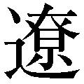
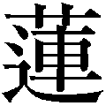
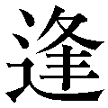

| 「仕事」論 | |
| 岬 龍一郎 | |
| 株式会社ＰＨＰ研究所 (2006) | |

「仕事」論
自分だけの「人生成功の方程式」をつくる
岬 龍一郎
「仕事」論 目次
唐突かもしれないが、「あなたの知っている世界の偉人は誰か」と質問されて、あなたは誰を挙げるだろうか。
おそらく多くの人はこの人物の名を挙げるだろう。アインシュタインである。
この天才といわれ、相対性理論を構築したノーベル物理学賞受賞者は、まぎれもなく世界の偉人であり、世界中の多くの人々が間接的に彼の偉業の恩恵に授かりながら、日々の生活をしている。
では彼はどのような考え方で仕事をしていたのか。
こんな逸話がある。彼は若いころスイス特許局の技官として働いていたのだが、その仕事のかたわらで物理学の研究を続けていた。特許技師としても優秀で、三級技術専門職から二級へと昇進していった。そのころの彼は、一日を三等分して、勤務に八時間、研究に八時間、睡眠に八時間と割いて、規則正しく日々を送っていたという。このあたりのことは、『成語大辞苑』（主婦と生活社）に詳しい。
あるとき後輩が、この尊敬すべき先輩に向かって「人生の成功の秘訣は何か」と尋ねた。そのとき、なんと次の「方程式」を用いて答えたというのだ。
〈Ａ（成功）＝ Ｘ（仕事）＋ Ｙ（遊び）＋ Ｚ（沈黙）〉
そんな方程式があったのかと驚いた方は、よし自分も真似してみようと思われたかもしれない。それにしても人生の成功を語るときに、「仕事」と「遊び」というのはわかるのだが、「沈黙」とは一体どういうことだろうか。そのような疑問が湧くはずだ。
じつはアインシュタインは「私の魂をつくったもの、それはモーツァルト」と語っているように、モーツァルトの大ファンであり、その音楽を聴きながら、自らを沈黙の中に置き、頭の中で創造的に実験する「思考実験」をしていたのである。
「光の矢」（光の矢を光の速度で追いかけたら止まって見えるだろうか？）も、「落ちるエレベーター」（宇宙空間で無重力になるのと同じ状態になるのか？）なども、沈黙の中での、この思考実験から生まれたものであり、のちの相対性理論を生み出すきっかけともなったのだ。
いわばアインシュタインにとっての「沈黙」とは沈思黙考のことであり、ただ黙っているという状態ではなかったのである。
ならばこれこそが、人類共通の、人生さらには仕事の「成功の方程式」なのではないか、と考える方もおられるだろう。しかしそれは間違いなく違う。
この成功の方程式は、アインシュタインという一人の人間が成功するために、彼自身があみ出した最適な必須条件だったのであり、参考にできるものではあるが、誰しもにあてはまるものではないからだ。
そこで筆者は、先のアインシュタインの成功の方程式を参考にして、筆者なりの成功の方程式をつくり、日々の指針としている。それは次のようなものだ。
仕事の成功 ＝ 志（大志）× 意欲（情熱・熱意）× 才能（努力）× 魅力（人徳・人柄）
仕事を達成するには、まずは事を成し遂げようとする意欲が第一であり、ついで才能とそれを向上させる努力、さらには周囲の協力を得られる人間的魅力がなければものごとは達成できない。しかし、これらすべてのことも、「志」がなければたいしたものにはならない。だから、「志」を最初に置いている。
このことは筆者が自らの実体験を重ねていく中で、もはや確信になっている。
というのも筆者はここ数年、リーダー学としての『武士道』の講演を、経営者や経営幹部の方々にすることが多い。お会いして、「この人は人物だな」と思う人は正直いって数少ないが、そのような人には必ずといっていいほど、彼らなりの「成功の方程式」があるものだなと間違いなく感じている。そしてそのような「人物」ほど、高い「志」を持っているのである。
いまの時代は、「あなたはあなただけ」とか「オンリーワン」といった言葉が、自己啓発書だけでなく、歌詞にも、小説にも雑誌にもあふれている。個性を尊ぶこの風潮自体は、素晴らしいことだと筆者も思う。
だが、いざ人生や仕事で成功しようとすると、「オンリーワン」を叫ぶ人にかぎって、自らの手で試行錯誤しながら成功をつかみ取る努力をすることもせずに、他人の「成功の法則」を真似て成功することばかり考えているのではないかと思う。
「学ぶ」という字は「真似る」から生まれたという説もあるぐらいだから、真似ること自体は悪くない。というよりも最低必要事項だ。しかし、そこから脱して、自分だけの「成功の方程式」をつくり上げることが、真の成功者になるための必要不可欠な条件なのである。
それを芸事では「 守 ・ 破 ・ 離 」という。まずは基礎を守って、やがてそれを破り、離れて自分流のオリジナルをつくっていくという方法である。
成功者になりたいと考えるのなら、あなたも、あなたなりの「成功の方程式」をつくり出すことが、成功への第一歩なのである。
仕事、さらには人生の成功の方程式をつくろうと願うなら、まずその第一は仕事に没頭してみることだろう。
現状が不遇な人、あるいは逆境にいる人は、その仕事が一生の仕事にはならないのかもしれない。天職を見つけるために幾度か転職して起業していくこともいい。ただ、どんな人でも最初から天職などが見つかろうはずもないのだ。
だからまず目の前の仕事をとことんやる。できることなら、その仕事を好きになろうとすることだ。そしてやがては、その仕事を楽しむようになれば最高である。
仕事が楽しみとなり、遊びとなった偉人がいる。エジソンである。
エジソンは「私は一日たりとも、いわゆる労働などしたことがない。何をやっても楽ししくてたまらない」といったセリフを吐いたという。
しかし、われわれ凡人というものは、仕事を労働として義務的にやるから、楽しむ前に苦労をしてしまうのだろう。
では、われわれ凡人はどうすればいいか。好きな仕事を見つけ出し選ぶことができれば最高だが、それができない場合には、『道は開ける』などのベストセラーで日本でも有名なデール・カーネギーの次の言葉が役に立つのではないか。
〈仕事が面白い「ふり」をすると、それだけで仕事が面白くなるから妙だ。疲れをあまり感じられなくなるし、緊張も解け、心配もやわらぐ〉
〈一見大したことのない仕事でも、思いきって全力を注ぐことだ。仕事を一つ征服するごとに実力が増していく。小さな仕事を立派に果たせるようになれば、大仕事のほうはひとりで片がつくようになる〉
（ドロシー・カーネギー編 神島康訳『カーネギー名言集』創元社）
たしかに、どのような仕事でも〝 石の上にも三年〟 といわれるように創意工夫を続けていると、その仕事の面白さもわかるようになり、面白さがわかるようになると、このとき仕事は義務ではなく、生き甲斐へと変わっていく。たかだか一年、二年やってみて、「この仕事は自分には向いていない」というのは、スポーツ選手が基礎訓練中にトレーニングを放棄してしまうのと同じようなものだ。
とはいえ、三年努力しても一向に楽しくならなければ、さっさと辞めてほかの仕事を探すのもいいかもしれない。成功者といわれる人の中には、意外と多くの仕事で失敗を重ね、それを糧とし、自分の好きな道を選んだという人は結構いるからだ。
ただし、新たな仕事にいったん着手したら、目標とするすべてが得られるまで手を抜かないぞ、といったぐらいの心の底からこみ上げてくる「意欲」こそが、成功するための基本であり、成功の方程式をつくり上げるための必須条件だといえるだろう。
この「心の底からの意欲」を、京セラ創業者の稲盛和夫氏は「情熱」という言葉に換え、その稲盛氏に大きく影響を及ぼしたといわれる故・松下幸之助氏は「熱意」という言葉にして多くの人々に語ったのだと筆者は考える。
だが、それでもなお仕事がうまくいかないという人のために、『若きウェルテルの悩み』などで有名なドイツの作家ゲーテの言葉を紹介しておこう（前掲書『カーネギー名言集』に所収）。
〈立派な目標と偉大な仕事をやり遂げる道は二つしかない。体力と忍耐力である。体力はほんの一握りの恵まれた人間のものである。しかし厳しく身を守り、常に耐え抜くことは、ごく弱小な者でもできるし、たいていの場合目標を達成する。これは、彼の無言の力が時がたつにつれ、何物にあってもへこたれないほど強力になるからだ〉
たとえ仕事に苦しもうと楽しもうと、能力や才能に差があろうと、「何があってもへこたれない」という「忍耐力」と「意欲」だけは、誰にとっても不可欠なのではないか。そして、これを加味したうえでのあなただけの「成功の方程式」をつくることだ。
かつて筆者は病気で入院した。正直頑張りすぎた。体力には自信があっただけに、自分がポキッと折れた枝のように感じた。そしてその後に、意識的に「ゆとり」を持つために会社と自宅の真ん中にワンルームの部屋を借り、一時期そこを「隠れ家」と称して、仕事とはまったく関係のない古典や思想書を読み漁った。疲れたときはクラシック音楽に浸った。ビデオで映画三昧にふけったこともある。
いまにして思えば、その「隠れ家」は、アインシュタインのいう〝 沈思黙考〟 の場であり、新たなる人生を切り開くためのものだった。実際にそれ以降、多くの本を書くようになり、『武士道』や『学問のすすめ』『言志四録』などについての現代語訳本も出し、講演活動に追われる日々を送っている。
病後に意識した「ゆとり」が、今日の仕事を下支えすることになったのである。
多忙な社長たちの間でも「隠れ家」を持つ者は多い。彼らもそこで絵画や骨董の趣味にふけっている。ただただ日常の仕事に追われる身としては、この心の余裕こそ必要なのである。
そこで思い出すのが、歴代の首相たちから師と仰がれ、まさに碩学という言葉が似つかわしい故・安岡正篤の以下のような言葉である。
〈死中、活有り。苦中、楽有り。
忙中、閑有り。壺中、天有り。
意中、人有り。腹中、書有り。〉
（安岡正篤『運命を創る』プレジデント社）
筆者流に意訳するなら、「死中、活有り」とは、せっぱ詰まったときにこそ活路は見いだせるということ。「苦中、楽有り」は、苦労のないところに楽しみはないということ。
「忙中、閑有り」は、仕事のできる人は、できるがゆえにさらに仕事が増えるが、それでいて本も読んでいるし、芸術も愛している。忙しいからこそ閑（ヒマ）の使い方がうまいことを表す。
「壺中、天有り」は、自分の現実生活の中に別天地があるとの意味で、いわば趣味や道楽など好きなことを楽しむ世界を持っているということだ。
「意中、人有り」は、尊敬する人、私淑する人を心の中に持っているということだが、現実的に、イザというとき信頼できる友人をハッキリ決めておくとの意味でもとらえていい。
「腹中、書有り」は、情報や雑学的知識の本ではなく、思想や哲学書といった自分のバックボーンとなる書を持つことの大切さを説くものである。
ここの中でとくに注目してほしいのは、「壺中、天有り」という言葉だ。
アインシュタインが自らの「成功の方程式」の中で、「沈黙」と称してモーツァルトを聴き、それによって新たなる思考を生み出したことと相通ずるではないか。
クルマのハンドルにも〝 遊び 〟 という部分があるように、現実生活の中に別天地を持っているということは、仕事に追われる人ほど必要なことなのである。
仕事には一所懸命に取り組む。しかし「趣味は仕事です」などという度量の狭い人間にだけはなってほしくない。長い人生には、もっともっと楽しい豊かな世界もあるのだ。仕事とゆとりのバランスがとれてこそ、素晴らしい人生になるはずである。
なお、本書は各章ごとに、筆者が尊敬する古今東西の偉人・達人から学び会得した、筆者なりの「仕事」論を述べさせていただく。そしてそれらを踏まえたうえで、さらに役立った参考になる書物、名言を紹介し、解説させていただくことにする。
本書を手にした方々が、それぞれの「成功の方程式」をつくり出し、自分流の花も実もある有意義な人生を歩むために、資するところ大と思われるものを厳選しているので、ぜひとも参考にしてほしい。
「仕事」通になる名文・名言・名句［現代語訳・解説］
一、世の中で一番楽しく立派なことは、一生を貫く仕事を持つことである。
一、世の中で一番みじめなことは、教養のないことである。
一、世の中で一番さびしいことは、仕事のないことである。
一、世の中で一番みにくいことは、他人の生活をうらやむことである。
一、世の中で一番尊いことは、人に奉仕して決して恩を着せないことである。
一、世の中で一番美しいことは、すべてのものに愛情を持つことである。
一、世の中で一番悲しいことは、嘘をつくことである。
（福沢諭吉（伝）「心訓七則」）
この福沢諭吉の「心訓七則」は人口にあまりにも 膾 炙 されているが、どうも福沢本人の述語ではないようだ。
だが、人生の妙味を表したという点で大変参考になるものなので、あえて掲げた。
いうまでもなく、人は仕事を持って社会と接し、その仕事によって自分の存在を認めてもらっている。さらにいうなら人は、仕事によって倦怠や怠惰を遠ざけ、その仕事によって人格も能力も鍛えられ、達成感も満足感も得ることができるのである。いわば仕事は自己実現の場であり、人生の成功者とは仕事の成功者といっても過言ではない。
もちろん仕事は、どのようなものでも仕事自体には 貴 賤 はない。貴賤があるとすれば、その仕事に従事するその人にあるということだ。当然のことだが、仕事は自分のため、仲間のため、家族のため、社会のために役立つものでなければならない。
だから、この七訓の中で仕事についてのものが二例もあるのだろう。
事実、いちばん楽しく立派なことは、一生を貫く仕事を持っている人である。これを天職という。そしていちばんさびしいことは仕事のないことである。リストラされてガックリくるのは、単に経済的理由だけではなく、自己実現の達成の機会が失われ、社会とのつながりが切れてしまうからである。
この七則を噛みしめて読むと、他のすべても仕事によって補われ、あるいは鍛えられていることがよくわかる。
人間がこの世で生きるということは、仕事を通してであることを忘れてはならない。
仕事をする場合は、天に仕えるといった謙虚な気持ちで行うことが大事である。けっして人に自慢しようという気持ちで臨んではならない。
（佐藤一斎『言志録』第三条より）
仕事をゲームだと考える人がいるが、それは金儲けとか営業成績を競うとか、仕事を義務的な労働として考えている場合であって、本来はどのような仕事でも神聖なものである。ゲームとして考えている人は、まだ仕事の深さや重さを知らない人だといってよい。
だから世に必要とされる仕事でくだらないとされる仕事は何ひとつない。報酬の不平等はあったとしても、それは経済原理にともなうもので、必要でない仕事というものはありはしない。
では、なぜ人によっては不満が生じるのか。それは仕事の価値よりも出世競争や金銭の多寡を問うからである。そのような人のために戒めとなる言葉がある。
西郷隆盛が遺した『南州翁遺訓』にある次の言葉だ。
「人を相手にせず、天を相手にせよ。天を相手にして、己を尽くし、人を咎めず、我が誠の足らざるを尋ぬべし」
とかく人と比べて自分の不幸を嘆く人が多いが、その仕事を選んだのは自分であるのだから、人を相手にせず、天を相手にすること。天を相手にすれば人を羨むこともないし、ましてや仕事での責任を人のせいにすることもできない。
「我が誠の足らざるを尋ぬべし」というのがいい。すべての責任は自分にあるとの意味で、ただひたすら自分の努力の至らなさを反省しろということだ。
他人のせいにしたがるのは世の常であるが、そういう人はまだまだ自己が鍛えられていない証拠である。
小官の不注意により、陛下の艇を沈め部下を殺す。誠に申し訳なし。されど艇員一同、死に至るまで、皆よくその職を守り、沈着に事を処せり。
我らは国家の為、職に 斃 れしと 雖 も、ただただ遺憾とする所は、天下の士は、これを誤り以て、将来潜水艇の発展に、打撃をあたうるに至らざるやを、憂うにあり。 希 くば諸君益々勉励して、この誤解なく、将来潜水艇の発展研究に、全力を尽されんことを。さすれば我ら、一つも遺憾とする所なし。
（「佐久間艇長の遺書」より）
いまでは佐久間艇長といっても知る人ぞ知る人物となってしまったが、戦前までは「修身」の教科書に載っていた有名人である。筆者は夏目漱石の手による「文芸とヒロイック」という随筆の中で知った。
佐久間艇長とは、明治四十三年四月十五日、山口県新湊沖で訓練中、乗船していた第六潜水艇が沈没し、殉職した海軍大尉・佐久間勉艇長のことである。
潜水艇の沈没となれば、襲いかかる水との格闘でパニック状況に陥るところを、佐久間艇長以下十四名の乗員たちは、冷静沈着にして、それぞの職務を遂行しながら、海のもくずと消えていったのである。
佐久間艇長は部下に指令を与えながら、もはや助からないと知ると、司令塔にこもり小さな窓から入るわずかな明かりを頼りに、手帳を開き、以後の潜水艇発展のためにと、沈没の原因と状況を細かく「遺書」として書きつづったのである。これはその文章の前半の部分にあたる。
そして最期に、薄れ行く意識の中で、「この事故を教訓として学んでもらえれば悔いはない。艇員たちは死ぬまで持ち場を離れず職務をまっとうしてくれた」と記し、さらに「公遺言」として、「謹んで陛下に 白 す」と記し、「艇員たちの遺族に対しては特別のご配慮を給わりたい」と、艇長として部下を思いやり、部下の名前を一人ひとりつづりながら息絶えていったのである。
この話は夏目漱石ばかりか反戦平和の歌人といわれた与謝野晶子をも刺激し、「海底の 水の明かりにしたためし 永き別れの ますら男の文」など十首あまりを詠み、佐久間艇長を追悼している。その反響は国内ばかりか世界に知れ渡り、イギリスやアメリカの海軍学校では、これを軍人のあるべき姿として賞賛したという。
かのトラファルガーの戦いで、イギリス海軍はフランスとスペインの連合艦隊に勝利して、以後の大英帝国繁栄の基礎を築くが、このときのイギリス海軍の司令官がネルソン提督。彼は勝利しながらも艦上で銃弾を受け、戦死するが、そのときの最期の言葉が「私は、私の義務を果たした」というものであった。要するに、仕事とは自分に与えられた任務を最後まで遂行することにほかならないことを、これらの話は教えてくれるのである。
なお、佐久間艇長については、広島県呉市にある「大和ミュージアム」でも、その一部が掲げられているが、福井県三方町（現・若狭町）の生まれ故郷には「佐久間記念館」があり、全文を知ることができる。
大事をなそうと思ったら、小さな事でも怠らず努力することだ。すべてものごとは小が 積 もって大となる。
ところが、小人物にかぎって最初から大きな事を欲し、小さな事を怠るものだから、結局は何もできないで終わっている。
（二宮尊徳口述 福住正兄筆記『二宮翁夜話』第一四条より）
いわゆる「積小為大」といわれるもので、重要なことを成し遂げようと思ったら、まずは目の前の小さなことから着手しろという意味である。現代流にいえば「できることからコツコツと」ということになろうか。さらに尊徳は「コツコツと働き、知恵を使って正当な利益を生み出す以外に、人の生きる道はない」ともいっているが、この言葉はいかに時代が変わろうとも、人間の生き方の正道を述べたもので、正鵠を射ている。
二宮尊徳の思想を理解するには、この『二宮翁夜話』を読むのがいちばんだが、それによれば、尊徳がこの「積小為大」の哲理を発見したのは十七歳のときであったという。
当時、彼は叔父の家の居候であったが、あるとき道端に落ちていた一束の苗を見つけ、持ち帰って沼地の片隅に植えた。仕事の合間に世話をすると、秋にはそれに見合う稲穂が実り、それをもとにして翌年にはさらなる収穫を上げていった。大自然の恵みは、それに報いる努力をすれば必ず「小」を「大」にして返してくれることを悟ったのだ。
類似した言葉に「着眼大局・着手小局」というのがあるように、目標は高く掲げてもよいが、やはり手をつけるところは小さなところから積み重ねていかねばならない。
尊徳の教えで、もう一つ筆者が気に入っているものに「心田開発」というのがある。尊徳が小田原藩主の依頼を受け、桜町領の再建に臨んだとき、最初に取り組んだのは荒廃した田圃を耕すことだった。だが農民たちは惰眠をむさぼり誰も働こうとしない。そこで尊徳が農民を前に説いた。
「土地が荒廃するのは人間の心が荒れているからだ。まずはみなさんの心を耕してください。心を耕したら、つぎは田畑の荒れを耕し、水を引き、苗を植えていけば、おのずから土地が豊かになり、同時にみなさんも裕福になるのです」
尊徳が偉かったのは、自らがそれを率先垂範し、つねに公平を原則として信賞必罰を行い、それによって勤労意欲を養い、仕事の中に人間の生き甲斐も幸福もあることを具体的に教えていたことである。今日、二宮尊徳の思想はあまり伝えられていないが、「至誠実行」をモットーとする彼の生き方は、金儲け主義がはびこる現代こそ学ぶべき点が多いのではないか、と筆者は思う。
序章で紹介した筆者の成功の方程式の最初にある「志」であるが、「志」といえば、かのクラーク博士である。
「ボーイズ・ビー・アンビシャス（少年よ、大志を抱け）」という言葉を、青年期に一度は聞いたことがあるはずだ。
この名言は「大志を抱いて立身出世しろ」との意味に使われ、かつての青少年たちを鼓舞したものであるが、じつは少し曲解されている。
というのも、この言葉の前には「それは金銭に対してではなく、また世間の人が名声と呼ぶあのむなしいものに対してではない。人間が、人間として当然身につけるべきものに対して」とあり、そのあとに「少年よ、大志を抱け」と続くのである（『成語大辞苑』〈主婦と生活社〉に所収）。
つまりクラーク博士は、なにも立身出世をしろとか、名声を上げろとか、金持ちになれとか、そのような世俗の功名を求めたのではなかった。むしろそれとは反対に、「人間として当然身につけなければならないもの」、すなわちキリスト教でいうところの、人間が人間として尊厳を持って生きるための「道徳律」を身につけ、自分自身の道を正しく生きろと説いたのである。その意味での「大志」だったのだ。
マサチューセッツ州立農科大学の学長だったクラーク博士が、札幌農学校（北大の前身）に招かれたのは明治九年（一八七六）のこと。滞在期間はわずか八カ月であったが、この短い期間に彼は計り知れないほどの足跡を残した。プロテスタントの敬虔なクリスチャンだった彼は、キリスト教による人格教育を指導し、近代日本に「クラーク人脈」ともいえる傑出した人材を送り出したのだ。
クラーク博士に影響を受けた生徒には、北大総長となる佐藤昌介、音韻学者の大島正健、世界的名著『武士道』の著者・新渡戸稲造、日本キリスト教の始祖・内村鑑三、植物学者の宮部金吾らがいる。
これらの人脈を見ていると、教育の真の成果は、歳月の長短などではなく、教える側の「愛と情熱」の賜物であることを如実に教えてくれる。
人間はいつからでも大志を抱くことができる。その時期に早いも遅いもない。クラーク博士のような素晴らしい師に、青年期で出会うことができなかった人も多いだろう。だからといってあきらめる必要もない。老人でも、「青春」の心を持することができると説いたのはサミュエル・ウルマンだが、「志」も年齢には関係ない。もちろん少年期から抱いたほうがいいには違いないが。
さてそこで、人間が成功するうえでもっとも大切にすべき「大志」について、もう少し身近な最近の日本人の例で考えたい。
「イチロー」である。
メジャーリーグでの大活躍で、いまや日本中で知らない人はいないであろうイチローは、少年期から「一流のプロ野球選手になること」を夢にしていた。
『小さな人生論』（藤尾秀昭著、致知出版社）から拾った彼の作文を読んでみると、「そのためには中学、高校と全国大会に出て活躍しなければなりません。活躍できるようになるためには練習が必要です。僕は三歳の時から練習を始めています。三歳から七歳まで半年くらいやっていましたが、三年生の時から今までは三百六十五日中三百六十日は激しい練習をやっています。だから、一週間中で友達と遊べる時間は五、六時間です。そんなに練習をやっているのだから、必ずプロ野球選手になれると思います」と書いてある。
このイチローの、ファンを魅了するいまの華麗なプレーの数々が、このような地道な修練に基づくものであることは、誰しもが認めるところであろう。
自らが抱いた夢の実現のために、それ相当の代償を払っている。しかもそれがただの空想でない。この代償が自信につながり、「確信」になったのだろう。
かの宮本武蔵は『五輪書』の「水の巻」の中で、「千日の稽古を鍛とし、万日の稽古を練とす」と語っている。夢を実現するということは、こうした血のにじむ努力があってのことなのだ。
しかも、その作文はこう締めくくられていた。「僕が一流の選手になって試合に出られるようになったら、お世話になった人に招待券を配って応援してもらうのも夢の一つです」と。
じつはここに、イチローの大きな成功の秘訣があると筆者は思っている。イチローの夢は、自分のためだけのものではない。お世話になった人に対して恩に報いるという感謝の気持ちが少年期のころよりあったのだ。
ゆるぎない信念、それに向かっての人一倍、いや百倍の努力、そして感謝の念を忘れないこと。これこそが「夢」の実現のための「大志」なのではないか。
とはいえ、「志」を維持するというのは大変なことである。大変なこととは、そう簡単に実現できるものではないという意味である。
一度なりとも抱いた「志」を貫き通すことがいかに難しいことか。「志」を抱き、その道を突き進んだ人にしかこの難しさはわからない。しかしながら昔の日本人は、いまの人以上にはそのことを知っていたように思う。司馬 太郎さんの本にあるこんな一節を紹介しよう。
〈「志の高さ低さによって、男子の価値がきまる。このこと、いまさらおれがいうまでもあるまい。ただおれがいわねばならぬのは」
と、継之助は息をひそめた。
「志ほど、世に溶けやすくこわれやすくくだけやすいものはないということだ」〉
（司馬 太郎『峠』〈上〉新潮文庫）
『峠』という小説は、幕末の越後長岡藩に彗星のごとく登場した英傑河井継之助の一生を描いた小説である。筆者の好みからいえば、この作品こそ司馬作品の中での最高傑作だと思っている。
何がそんなに素晴らしかったのか。一言でいえば継之助の「生き方の美学」である。大義に生き、大義のために命を捨てるという武士道の生き様をものの見事に活写した作品となっているからだ。正直に告白すれば、筆者のその後の人生に大きく影響した一冊だったといえる。
それはさておき、先の文章は継之助が江戸に留学していた久敬舎（幕府蕃書調所頭取・古賀謹一郎の私塾）で、十六歳の少年鈴木佐吉に「志」について語った言葉である。
司馬さんは、題材に取り上げた人物の中に「日本人のあるべき姿」を投影させつつ描ききるという離れ業ゆえに、不世出の作家となりえたのだと筆者は考えているが、日本人を知りつくした司馬さんが、継之助を通じて「志はこわれやすい」といっているのだ。
しかも、この本で司馬さんが、続けてこう書いてくれている。
〈男子の生涯の苦渋というものは、その志の高さをいかにまもりぬくかというところにあり、それをまもりぬく工夫は格別なものではなく、日常茶飯の自己規律にある、という。箸のあげおろしにも自分の仕方がなければならぬ。物の言いかた、人とのつきあいかた、息の吸い方、息の吐き方、酒ののみ方、あそび方、ふざけ方、すべてがその志をまもるがための工夫によってつらぬかれておらねばならぬ、というのが、継之助の考えかたであった〉
やはり、志を貫くことは大変なことである。ありふれた日常茶飯事の所作動作の中に自己規律をつくり、それを守り抜くことだというのだ。
「大事の前の小事」という諺があるのだが、「大事を成し遂げるには、小事の犠牲はやむを得ない」という意とともに、「大事の前には、どんな小事も油断をするな」の意もある。こと「志を遂げる」ということにおいては、後者の意が正しいのかもしれない。
「志」というと多くの人はいまでも、何か大それたことを目指すものと考えているが、けっしてそういうことではない。その実例として、どうしても知っておいてほしい名著がある。以下、長くなるが引用する。
〈われわれが五十年の生命を託したこの美しい地球、この美しい国、このわれわれを育ててくれた山や河、われわれはこれに何も遺さずに死んでしまいたくない、何かこの世に記念物を遺して逝きたい、それならばわれわれは何をこの世に遺して逝こうか、金か、事業か、思想か、これいずれも遺すに価値あるものである。しかし、これは何人にも遺すことのできるものではない、またこれは本当の最大の遺物ではない、それならば何人にも遺すことのできる本当の最大遺物はなんであるか、それは勇ましい高尚なる生涯である〉
（内村鑑三『後世への最大遺物 デンマルク国の話』岩波文庫）
これは、日本的キリスト教徒（無教会主義）の先駆者として知られる内村鑑三が、明治二十七年（一八九四）、有名な不敬事件を起こしたあと、日本国中「枕する処なき」の不遇時代に、『後世への最大遺物』と題して若きキリスト教徒のために講演した一部である。
内村のいう「勇ましい高尚なる生涯」とは、なにも大事業を興せとか、歴史上の人物になれとか、そういうことをいっているのではない。高尚とは尊い生き方ということであり、たとえばそれは、社会のために自分がやる気になれば生涯を通して実行できることを、あとに続く人々への遺産にしろといっているのである。
その例として、この本に収録されている『デンマルク国の話』では、戦争で焦土と化したデンマークの国に、一人の青年が立ち上がり、一本の樹を植えることで国土を回復させた話が出てくる。要するにそれは、名誉とか、名声とか、財産とか関係なく、隣人を愛して周囲の人を助けること、老人をやさしくいたわること、正直に生きること、町がきれいになるように花を植えたり掃除をしたりすること、そうした身近な徳の実行をいっているのである。そしてそれはすなわち、クラークが唱えた「大志」の行いである。いわばこれこそ高尚なる生涯であり、彼のいう志なのである。
たった一人の自分がまず始めることで、いつの日か世の中が明るくなり美しくなる。そのことを「志とせよ」と、内村は教えてくれているのである。
『国家の品格』という藤原正彦氏の新書がある。
この本のタイトルは「国家」としているが、筆者はこの本の本当の意は「日本人の品格」を問うているのだと思う。多くの読者の目にとまったようだが、これは同時期に、日本人のまさに「品格」を疑うような「耐震強度偽装問題」や「ライブドアの粉飾疑惑」などの事件が世間を揺るがし、そうした企業の倫理観の欠如に対する、日本人全般の危機感が少なからず影響したのだろう。
なぜここまでに「日本と日本人」は落ちぶれてしまったのかについて述べるのは、本書の主旨とそれるため、あえて多言は避けるが、江戸期に成熟した日本人の伝統的精神である「武士道」、さらにはその武士たちが大切にした「志」がどこかへ忘れ去られたからではないかということを、筆者は常々主張してきた。
ちなみにここでいう「志」は、先に触れたクラーク博士の「大志（アンビシャス）」とは同じものであり、また違うものでもある。
意味も考え方も同じであるが、日本人の精神の中にあるかぎりにおいて、「アンビシャス」は「志」ではない。そもそも「アンビシャス」とは辞書では「野望」となっている。しかしクラーク博士のいわんとしたところは「野望」ではない。「大志」にかぎりなく近い。しかしやはり、「士の心」と書く日本人の「志」とは異なるものなのである。
グローバリズムの波に完全に飲み込まれた現代社会の中で、「この人ははたして日本人か」と思えるようなアメリカ流の思考で、「ただ儲かればよい」と行動する企業家・投資家たちが増えている。このこと自体は今日の資本主義社会においては悪いことでもないし、責めるべきことでもない。しかし、その彼ら日本人の遺伝子には、アメリカというキリスト教を礎に置く文化や倫理観が刻み込まれていない。よって、アメリカ人の「アンビシャス」を頭で理解しても体では理解できていない。だからそれは「志」ではなく、ただの直訳の「野望」になってしまっているのである。
日本人ならばやはり、日本人なりの日本文化に基づく企業家・投資家精神をつくり上げなければならない。そう思うのは筆者だけであろうか。
いまや日本人は、良くも悪くも世界の中で仕事をしていかねばならない時代が来ている。だからこそ日本人として忘れてはならない「心」を、さらに大切に保持していかねばならない。
そして「志」を大切にしなければならない。
それでこそ日本人としての仕事の成功も得ることができるのではないか。
「志」の名文・名言・名句［現代語訳・解説］
われ、太平洋のかけ橋とならん
新渡戸稲造
この言葉は、前述のクラーク博士の薫陶を受けて、その「大志」を実行した新渡戸稲造の言葉である。
新渡戸は、日本が誇る第一級の国際人であり、偉大なる教育者であり、日本文化を世界に広めた功労者であり、何よりも「国際平和の使者」であるのだが、戦後世代の日本人は偉人伝というものを読まなくなったせいか、残念ながら、いまや知る人ぞ知る人物となっている。
子供たちにとって、偉人伝は「自分もこのような立派な人になろう」との、もっとも身近な志を立てる材料になるのだが、その習慣をなくしたということは、素晴らしき見本を捨ててしまったに等しい。
その新渡戸だが、彼は文久二年（一八六二）、岩手県盛岡の南部藩士の家に生まれた。少年時代に札幌農学校で学び、クラーク博士の教えに大いなる影響を受けた。それは新渡戸をはじめ多くの生徒たちが敬虔なクリスチャンとなったことでもわかる。同期生の内村鑑三とは親友の間柄で、のちに内村は新渡戸を「彼は心に偽りのない少年であった」（『余は如何にして基督教徒になりし乎』）と評している。
札幌農学校を卒業した新渡戸は、明治十六年（一八八三）、東京に戻って東京帝国大学に入学した。このとき文学部教授の外山正一博士の面接を受け、「あなたは何のために勉強するのですか」と聞かれ、それに答えたのが、「われ、太平洋のかけ橋とならん」という言葉だった。
だが、教授にはその比喩がわからなかったのか、新渡戸はあらためて、「日本の思想を外国に伝え、外国の思想を日本に普及する媒酌人になりたいのです」と、答え直している。学問の目的は立身出世のためではなく、世のため人のためにある、というのがクラーク博士から教わった教訓だったからだ。
それにしても、戦後の日本人と比べて明治人はやはり土性骨が座っている、といわざるを得ない。今日、学生たちに「あなたの学問の目的は何か」と問うて、これほどの答えが返ってくる者がいようか。皆無であろう。多くの学生はおそらく、「勉強することは自分の生活をよくするため」ぐらいにしか考えていないのではないか。だから、法律の裏をかいて儲けようとするホリエモン（元ライブドア社長）のような輩が生まれてくるのである。
その後、新渡戸はその東大に失望し、私費でアメリカのホプキンス大学に入学した。「人として己に羞じず、地に低くとも天に高く、人に卑しめらるるとも神に愛せられんには、第一己を磨かざるべからず、それには広い世界に出なければ唯々遅れるのみと思い定めた」（松隈俊子著『新渡戸稲造』）からである。やがて、政府派遣の留学生としてドイツに渡り、帰国して、母校の札幌農学校の助教授となった。そして明治三十二年（一八九九）療養先のカリフォルニアで書いた『武士道』（原文英語）が世界的ベストセラーとなり、一躍、世界の新渡戸となったのである。
帰国後は、第一高等学校の校長と同時に東京帝国大学の教授となり、さらに東京女子大学の学長に就任。キリスト教に基づく「人格形成」の教養主義を提唱し、多くの有能な若者たちを育成した。また、生涯の目標とした「太平洋のかけ橋とならん」とする仕事では、最初の日米交換教授としてアメリカの六つの大学で日本文化を講義し、大正九年（一九二○ ）から同十五年までは国際連盟事務次長として活躍した。志を立て、その道をまっしぐらに努力することがいかに大切なことか、新渡戸はそれを実践したのである。
人は誰も次のことを反省し、考察してみる必要がある。「天はなぜ自分をこの世に生み出したのか。何をさせようとしているのか。身は天から授かったものだから、必ずや天職というものがあるはずだ。だから、この天職をまっとうしなければ、天罰を受けることになる」と。ここまで反省し、深く考えてくると、漫然とこの世に生きているだけではダメだと思うはずだ。
（佐藤一斎『言志録』第一〇条より）
「志を立てる」本といえば、 帝王 学の聖典といわれる『言志四録』（佐藤一斎著）を忘れてはならない。その『言志録』第一○ 条にあるのがこの言葉だ。ちなみに『言志四録』とは、『言志録』『言志後録』『言志晩録』『言志 耋 録』の四書を総称したものである。
そもそも、人間がこの世に生きるということは、誰もが何らかの「仕事」をもって社会と接し、生活を営むということである。つまり「仕事」をするということは、自分のためでもあり、人のため世のためでもあり、だからこそ生き甲斐となるのである。「仕」も「事」もともに「つかえる」と読み、「天に仕える」ことを意味する。天に仕えるとは、簡単にいうなら社会に貢献するということだ。それゆえに、自分にもっとも適した職業を「天職」というのである。
福沢諭吉も「世の中でいちばん立派なことは、一生を貫く仕事を持つことである」と語っているように、天職を持ち得た人は幸福な人といえるであろう。
では、天職とは何か。それは仕事を義務としてやるのではなく、それ自体が喜びとなるようなものを天職というのである。偉大なる発明王トマス・エジソンはアイディアがひらめくと、睡眠も食事も仕事机がそれに代わり、四時間以上眠ることはなかったという。それだけ仕事に熱中し楽しんでいたということである。
では、天職は才能や天分によるものかとなるが、そうではない。もっともいいのは好きなことを仕事にすることだが、誰もがそういうわけにはいかない。だが、どんな仕事でも地道に長く続けていれば、その仕事の深さや楽しさがわかり、「これが俺の天職だ」と断言できるようになる。ラーメン屋の親父さんや頑固者の職人さんたちがそういうのも、要するに天職とは、天分や才能よりも、一生をかけて自分自身でつくり出したものだからである。
そして、それが楽しいものになるのは、「自分だけ儲ければよいとの私欲よりも、世のため人のために役立っている」との自覚が、生き甲斐を生じさせてくれるからである。
『論語』にも、「命を知らざれば、以て君子たることなきなり」（いまだ何のために生まれてきたかを知らない者は、ひとかどの人物とはいえない）との言葉もあるように、天職を得た人は天命を知ったということであり、極論するなら、この天職を求め探すことが「志を立てる」ということなのである。
男子志を立てて 郷 関 を出ず
学 若 し成る無くんば 復 た 還 らず
骨を 埋 めるに何ぞ 墳 墓 の地を期せんや
人間 到 る 処 青 山 有 り
月性
これは、江戸幕末期の僧・月性が二十七歳のとき、郷里（周防）から大坂へ遊学した際の出発のときにつくった歌である。筆者流に現代語訳をすると、「男子たる者、いったん志を立てて故郷を出たならば、もし学問が成就しない場合は、二度と故郷に帰ってはいけない。なぜ骨を埋めるところを故郷の地に期待するのか。世の中には至るところに青山（骨を埋めるところ）があるではないか」となる。
まだ日本が高度成長期のころ、地方から上京したある学友が、酒席でこの詩を吟じたとき、筆者はこの詩を初めて知って驚いた。筆者のような東京育ちのなまくらな学生とは違って、勉学に対する覚悟というか、強い志を持っていたからだ。何がなんでも「故郷に錦を飾るのだ」といった向上心があった。
何が彼をそうさせていたのか。聞けば、彼の両親は進学の費用を捻出するために田畑の一部を売って工面したという。それだけ息子に対する期待があったのだろう。そしていま、彼はその望みを達成して大学の教授となっている。志を果たすまでは故郷には帰らない、とする彼の強い意志がそうさせたのである。
野口英世の言葉にも「志ならずんば、再びこの地を踏まず」というのがある。大学も出ていない野口が、世界的な医者としてその名を高めたのも、この強い志があったからだろう。志は生きていくうえでのエネルギーとなるのだ。
経済大国となったいまの日本の大学生は、「誰もが行くから」と見栄や体裁で大学に行くためか、そこは勉学の場というよりレジャーランド化しているという。勤勉の代名詞は、いまや中国やインドといった発展途上国の留学生に奪われている。識者たちはハングリー精神がなくなったからだというが、日本の将来を考えるとき、それだけでは片づけられない深刻な問題である。
佐藤一斎が「人生がものになるか、ならないかを決めるのは、この志の高さによる」と言い放っているように、志は自分の運命を切り開くときの源泉であることを忘れてはならない。
国の宝とは何か。宝とは道心である。道心のある人を、国の宝と名づける。故に古人はこう言っている。「さしわたし一寸の玉十枚は国の宝ではない。一隅を照らすものは国の宝である」と。
（最澄『山家学生式』より）
この話は最澄の師である唐の 湛 然 の著『 止 観 輔 行 伝 弘 決 』にある次の話をもとにつくられたとされている。
昔、魏王がいった。「私の国には直径一寸の 玉 が十枚あって、車の前後を照らす。これが国の宝だ」。すると、斉王が答えた。「私の国にはそんな玉はない。だが、それぞれの一隅をしっかり守っている人材がいる。それぞれが自分の守る一隅を照らせば、車の前後どころか、千里を照らす。これこそ国の宝だ」と。ここから「一隅を照らす」という言葉が生まれた。
「志を立てる」というと、いまでも多くの若者は、前述したクラーク博士の「少年よ、大志を抱け」を誤解して、立身出世をすることだと思っている。たしかに、〝 末は博士か大臣か〟 との言葉もあるように、博士や大臣や大企業の社長になることも立派なことである。だが、それが自分の名声や私欲のために目指すものであったら、それは志ではなく野心や野望というものである。「志」とは、「士」の「心」と書くように、本来は「公に仕える心」という意味である。
あの孔子も弟子に「先生の志を教えてください」と問われて、「私の志は、老人には安心されるように、友達には信じられるように、若者には慕われるようになることだ」（『論語』公治長篇）といっているように、志はあくまで私欲よりも世のため人のためという「公の心」がなければならない。したがって、博士や大臣や社長になる場合でも、その動機は「多くの人を幸せにしたいから」といった純粋な気持ちから発せられたものでなければ邪道なのである。
だが、いかに志を立てたとしても博士や大臣や社長は、誰もがなれるというものではない。そこで挙げたのが、この「一隅を照らす」である。この意味は、身分や貧富に関係なくいかなる職業であっても、社会のどんな場所においても、周りの人々を幸せにする人のことをいう。このような生き方だったら、日々の精進次第で誰もが可能であろう。
最澄上人がこのような人を「国の宝」と呼んだように、これはどんなに立身出世をするよりも素晴らしいことなのである。
安岡正篤は、この言葉を「一燈照隅・万燈照国」と置き換えて、一人ひとりの国民が、その立場、立場に応じて世のため人のために貢献すれば、国家はおのずからよくなる、と説いた。
長い人生のうちには、真っ暗な夜道を歩くようなときもあるが、そのようなときでも提灯を一つ提げていれば、いかに暗くとも心配することはない。ひたすら、その 灯火 を信じて進め。
（佐藤一斎『言志晩録』第一三条より）
原文の読み下しは、「一燈を提げて暗夜を行く」と始まる。志賀直哉の『暗夜行路』のタイトルとなった有名な言葉であるが、この場合の提灯とは、自らの強い志と解釈したい。
釈 の最後の教えとされる『大般涅槃経』の中に、「自灯明・法灯明」というのがある。釈 の最期を憂えた弟子の阿南が、「これまで私たちは、あなたを目標としてやってきました。これからは誰を頼って生きていったらいいでしょうか」と聞いたところ、「阿南よ、これからは自らを灯火として、それを拠り所とせよ、法の真理を灯火として、それを拠り所とせよ」といったという。
また『臨済録』には、「随処に主と 作 れば、立処みな真なり」（どこでも自ら主人公となれば、その場その場が真実である）といって、すべての主人公は自分であり、自分自身の精進にかかっていると教えているのである。その精進こそ志であり、強い志さえあれば、たとえ逆境であろうと恐れるに足らずということである。
本書の目的は、人生の成功をつかむために、どう「仕事」と向き合うかということを考えていただくことにある。
ここであえて、一つの疑問を呈しておきたい。人はなぜ「成功」を願う必要があるのか、という疑問である。あえて筆者がこうした問いかけをするのは、盲目的に「成功する」ことだけを人生の目的にしてほしくないからである。人にはそれぞれの生き方がある。富や名声をつかみ人生の成功とすることを最終目的にすることを否定はしないが、それを超えた目的が、人間にはあるのだということを知っておいてほしいのだ。
では、その成功を超える最終的な目的とは一体何か。
それは、人間として「幸せ」になるということである。
「幸せ」になりたい。それはごく普通の人ならば誰もが抱く、ごく自然な気持ちであろう。その「幸せ」像にも千差万別があるだろうが、やはり、自らの才能を努力により最大限引き伸ばして、自分や自分の周りにいる人、さらにはもっと多くの人々に、ひいては世の中の人々が「幸せ」になるために貢献をしていくという生き方こそが、最上であるというのは、誰も否定しがたいことだろう。
だから実際に、後世の人々から偉人とか達人とかいわれている人は、たいていそういう生き方をしている。仕事を通じて人生で成功、いや人間として成功をしているのである。いうなれば、仕事はあくまでも「幸せ」をつかみ、周りをも「幸せ」にするための手段であって、目的ではないのだ。
じつは、この人間として成功することを世間に説いた経営者が過去にいる。晩年期の松下幸之助である。松下電器という大企業を創業し、長年経営者として日本経済の躍進に大いに貢献し、富も名声も得た人物が晩年に探し求めていたのは、「人間としての成功」である。
そのことは、自らの著書『人間としての成功』に述べられている。松下は、「自分に与えられた天分を、そのまま完全に生かしきる」ことこそが「人間としての成功」であり、その〝 真の意味での成功〟 は、「社会的な地位や名誉や財産が成功の基準となるのではなくて、自分に与えられた天分に沿うか沿わないか、これを十分に生かすか生かさないか」が基準となるとしている。そしてさらに、「この天分に生きることによって、はじめてほんとうの生きがい、幸せというものを味わうことができる」ともしている。
つまり、それぞれの人がそれぞれの「幸せ」をつかむことに、人生の最終目的があると考えていたのである。
どうやら、現代の日本人には、この考え方が抜け落ちてしまったのではないかと思う。どのような「幸せ」が自分の「幸せ」なのかということを考えずして、ただ富や名声を得ることのみが「成功」であると思い込み、それが最上の目的となるがために、企業や政治家の不祥事が頻繁に起こるのではないか。
歴史を振り返れば、日本という国、そして日本人は、明治以来、西洋文明を金科玉条のごとく信じ、欧米諸国に追いつき追い越せを目標として、二度の大戦を間にはさみながらも、突き進んできた。その判断基準は、近代合理主義という精神であり、その考え方は、知識教育だけを重んじ、理性（学問）だけあれば幸せになれると思い込んできた。
たしかに近代合理主義は民主主義を生み出し、社会や文明を進歩させてきた。だが、欧米諸国に追いつき追い越した現在、物質的には豊かになったが、本当の「幸せ」というものを得たかというと心もとない。
合理主義のもたらした世界は、冷戦を経て、グローバリズムという覇権大国アメリカ主導の世界へと移行した。すべてを数字による生産性と効率性で測り、基準に合わないものは無用のものとばかり切り捨て、弱肉強食の世界、さらには二極化の社会構造を生み出しているのである。
そうしたなか、いまの日本人はその競争に負けまいと権利だけを主張し、個人主義を利己主義にはき違え、ますます住みづらい世の中をつくっている感がある。
日本人は欧米人ではない、にもかかわらずである。
人間として成功し「幸せ」になるとはどういうことか。そして日本人として「幸せ」になるとはどういうことか。
こうした視点を持つことが、仕事と向き合ううえで大切なことなのではないか、と考える。
人間として成功し幸せをつかんでいる人は「魅力」で満ちあふれている
筆者の私塾に、ある中年の女性がいる。大変な美貌の持ち主というわけではない。しかし、いつも光り輝いている。彼女はいわゆる美容師であり、業界では知る人ぞ知る人物で、いわゆる〝 パリ・コレ〟 にも参加し、世界でも通用する技術の持ち主である。しかしそんなことを自慢する風もない。
毎日、日々の仕事と家族の世話で忙しい毎日を送っているが、彼女から「笑顔」が消えたのを筆者は見たことがない。彼女がいるだけで、周りは明るくなる。彼女が運営している仕事場はいうまでもない。笑顔で満ちあふれている。
こうした人間こそが、「幸せ」なのではないのか、人間として成功しているのではないのか、とつくづく思う。日々のたゆまない、しかし何気ない努力が、彼女の「魅力」を維持しているのである。
これは筆者の身近な例であるが、偉人、達人といわれる人は、やはりそれぞれの「魅力」で輝いている。
いまは占いや、スピリチュアルなどが流行りだから、「オーラ」などという言葉をよく使うようだが、そんなものは、その人の「魅力」のことをそれらしくいっているだけのことだと思う。
「魅力」という点では、この人ほどに多くの日本人を惹きよせた人はいないと筆者が思う、中村天風先生の言葉をここで紹介しよう。天風先生については、筆者も『中村天風 心を鍛える言葉』（ＰＨＰ文庫）を書かせてもらっているが、日本で最初の〝 ヨーガ哲学者〟 といわれ、「心身統一法」をもって多くの人々を救済してきた達人である。
〈どこまでもまず人間を創れ。さすれば幸福は向こうからやって来る。それにはまず心を鍛えること。人間が人間として生きていくときいちばん大切なのは、頭の良し悪しではなく、心の良し悪しなのである。人間の本質であるところの心というものを大事にしないところに現代人の過ちがある〉
（中村天風述／財団法人天風会『成功の実現』日本経営合理化協会出版局）
そしてさらに天風先生はこうもいう。「幸せになりたかったら、心を鍛えよ」と。
没後もなお、ファンを増やし続ける天風先生の魅力の秘訣がここに凝縮されているように筆者は思う。
自分の心をより積極的に鍛え、その心に素直に生きることが、すなわち人生向上の秘訣であり、そうすれば人として幸せになれるというのである。
では、心を鍛えるにはどうすればよいのか。その極意も天風先生は教えてくれている。
それは、つねに積極的精神を持つということである。これはなにも「物事を前向きに考える」とか「くよくよしない」といったような単純なことではない。誰もが絶望するような状況の中でも、一条の光が見えれば、その光を信じて突き進んでいく強い精神のことだ。
そのための日常の生活方法は、「どんな場合にも、尊く、正しく、楽しく、人間らしく生きる」こと。挫折をしたり、失敗をしても、あるいは大病をしたとしても、これを神の与えた試練だと受けとめ、「神様も味なことをするではないか」ぐらいに考えて、笑って過ごせるぐらいになることである。
こうした生き方を実践していくうえで、筆者なりのコツとして「和顔愛語」という造語をつくり、筆者の塾生に教えている。苦しいときでも笑顔をたやさず、「ダメだ」「弱った」「悲しい」とか、気が滅入るような〝 悪魔の言葉〟 を吐かないこと。逆に「大丈夫」「やればできる」「苦あれば楽ありだ」と自分を鼓舞する言葉を唱えるという意である。
天風先生はこうもいう。「苦しいと思うから苦しいのだ。貧乏だと思うから貧乏なんだ。だが、その苦労も貧乏も自分を鍛えるために神があたえてくれたと思えばありがたいものではないか」と。
こうした心持ちでいられるようになれば、自分なりの「幸せ」がいつのまにか自分のすぐそばに寄ってくるはずだ。
「自らを鍛える」ための名文・名言・名句［現代語訳・解説］
「俺（私）がやらなきゃ誰がやる」との気概が、独立不羈の精神である
一人前の男は、自分自身の力に頼るべきであって、他人の財力や権力に頼るような弱気な心を出してはならない。天を動かし地を驚かすような大事業も、すべて一個の自分からつくり出されたものである。
（佐藤一斎『言志録』第一一九条より）
『法句経』の中にも、「自分こそ自分の主人である。他の誰が主人たりえようか。自分で自己制御ができるようになれば、その人は得がたい〝 主人〟 を得たことになる」とある。
すなわち、まずは自分の心を 制御 できる強い意志を育て、何者にも頼らない「独立不羈の精神」で立つことが肝要なのである。平たくいうなら、「俺（私）がやらなきゃ誰がやる」ぐらいの気概を持つこと。
だが、最近の風潮を見ると、誰もが「寄らば大樹の陰」とばかりに、権力になびき、財力におもねり、何かといえば他人の褌で相撲を取るような不甲斐ない輩ばかりが増えている。これではとても「イザというとき」の勝負はできまい。
孟子は「自ら省みて 縮 くんば、千万人といえども、吾 往 かん」（反省してみて、それでも正しい場合は、たとえ相手が千万人の大勢であっても、自分は恐れずに進んでいく）といったが、甘やかされて育った平成の男たちには、こうした気骨ある人物は少数派であろう。
一、世々の道にそむく事なし
一、身にたのしみをたくまず
一、よろづに 依 怙 （えこひいき）の心なし
一、身をあさく思い、世をふかく思う
一、一生のあいだ、よくしん（欲心）思わず
一、我、事において後悔せず
一、善悪に他をねたむ心なし
一、いづれの道にも、わかれを悲しまず
一、自他ともに、うらみかこつ心なし
一、恋慕の道、思い寄るこころなし
一、物ごとに 数 寄 このむ事なし
一、私宅においてのぞむ心なし
一、身ひとつに美食をこのまず
一、末々代物なる古き道具所持せず
一、わが身いたり、物忌みする事なし
一、兵具は格別、余の道具たしなまず
一、道においては死をいとはずと思う
一、老身に財宝所領を用ゆる心なし
一、神仏を尊んで、神仏を 恃 まず
一、身を捨てても名利はすてず
一、常に兵法の道をはなれず
（宮本武蔵『独行道』より）
この二十一カ条からなる『独行道』とは、有名な『五輪書』のあとに書かれたもので、「独り我が道を往く」ということである。ちなみに、『二天記』および宮本武蔵遺蹟顕彰会本では、「身をあさく思い......」「身を捨てても名利はすてず」の二条を削除して十九カ条としている。
いずれにせよ、生涯、妻もめとらず、師にもめぐり会えず、ひたすら己の力だけを信じて歩んだ〝 孤高の求道者〟 の姿が浮かんでくる。
だが吉川英治（小説『宮本武蔵』の著者）によれば、彼はこの『独行道』を「人に 訓 えるために 誌 るしたものではなく、彼（武蔵）が自己の短所を自己にむかって、反省の鏡とするために書いた座右の 誡 であった」（『随筆宮本武蔵』）として、その自戒から武蔵の人間性を読みとったようだ。
つまり、自戒するということは、裏を返せば武蔵自身の反省から生まれたもので、「事において後悔せず」というのは、彼が幾多の試合をし、それによって多くの後悔をしたことを語っており、「恋慕の道、思い寄るこころなし」とは、いかに恋慕の情が武蔵を悩ませてきたかが読みとれるというのである。そのように裏読みをすると、あの天下無敵の武蔵も普通の人間だったことがわかる。
関ヶ原で負け側となる西軍につき、武勲よりも文勲に重きを置く江戸幕府が開かれると、武蔵の剣は不要のものとなった。どう生きるかと迷ったはずだ。だが、われを生かす道は剣しかない。それは仕官を捨てたアウトローの道でしかなかった。それゆえに武蔵の生涯を貫いていた信条は、世俗の名利を離れた、己のみを信じる求道的合理精神の修練にほかならなかったのだ。「神仏を尊んで、神仏を恃まず」というように、神仏ですら拒む武蔵はおのずから自力本願の道を求めざるを得なかったのである。独りで生きるにはこれだけの厳しさが必要なのだ。
一国の国民が独立の気風に欠けるときは、独立国家としての権利を世界に宣言することはできない。その理由は次の三つである。
一、独立の精神がない国民は、国を愛する心も浅薄である。
一、独立の自覚がない者は、外国人と交わっても自己の権利を主張できない。
一、独立の気力がない者は、他人の権利に頼って悪に走る。
（福沢諭吉『学問のすすめ』より）
福沢のいう独立とは、「自分で自分の身を支配し、他人に依頼する心がないこと」。すなわち、他人の考えに左右されずに、自分でものごとの是非を判断し、行動し、その行動に責任を持つ者を独立人というのである。
この文章はなにも、明治人の気風を問題にしているのではない。なぜなら、国民が独立心を持たず、他人に頼ることばかりを考えていると、国民はみな、依頼心の強い者ばかりとなって、個人の主体性はなくなり、なんでも国や公共団体に頼り、個人的に世話をするような人などいなくなるだろうと指摘しているように、これは今日の補助金行政や福祉行政を言い当てているからである。自己を磨くとき、まずは独立不羈の気概を持つこと。
では、独立心を養いきれない者はどうなるのか。福沢はこういう。
「独立の気力なき者はかならず人に依頼し、人に依頼する者はかならず人を恐れるようになる。人を恐れる者はかならず人に 諛 うようになり、常に人を恐れ諛う者はしだいにこれに慣れ、その面の皮、鉄のようになり、恥ずべきを恥じず、論ずべきを論ぜず、人さえ見ればただ腰を屈するようになる。（略）目上の人に会えば、一言半句の理屈を述べることもできず、立てと言われれば立ち、舞えと言われれば舞い、その従順なることまさに飼いたる痩せ犬のようだ」
これらの言葉を聞いていると、犯罪と知りながらも会社の命令だからと、偽装設計をしたり、不正ラベルを張り替えたり、虚偽の報告をしたりと、会社ぐるみで〝 金の奴隷〟 になっている今日の日本人を彷彿させるではないか。人に頼らない、自らの名にかけて不正は行わない、この独立自尊の精神こそ魅力ある人物としてのバックボーンである。
一、稚心を去る
一、気を振るう（ 振 気 ）
一、立志
一、勉学
一、交友を選ぶ
（橋本左内『啓発録』より）
七歳年上の西郷隆盛から「先生」と尊敬された橋本左内が、元服を迎えた十五歳のとき、「大人になるために」と自らを啓発した書の中にある言葉。
「立志」「勉学」「交友」は普通の少年でも思うだろうが、「稚心を去る」と「振気」を置いたところが、左内らしい。稚心を去るとは、文字どおり「子供心を捨てる」ということで、これからは大人として甘えた心（依頼心）を持たないということである。
そうでなければ、何をしても上達せず、将来、天下第一等の大人物になることはできないというのだ。
また、振気とは、人に負けまいと思う心、すなわち〝 負けじ魂〟 ということである。左内の父親は福井藩の藩医であったが、彼は武士を志していたので、武士ならば、恥辱を知ってそれをはねのける気力が必要と、これを置いたのである。つまり「気を振るう」とは、つねに気概の精神を心に宿し、恥辱を受けずに堂々と生きることをいう。
『言志四録』の中にも「発憤の憤の一字こそ学問向上の大本である」（『言志録』第五条）との言葉が出てくるが、「負けてなるものか」という気持ちこそ、自分を磨くうえでもっとも必要なことであると説いている。
現代の若者たちに我慢や気概がないのは、こうした心を鍛えていないからである。
そもそも学問というのは、自分の徳を磨くためにするものである。すなわち、道を自分で体得することを尊ぶものといえる。雑多な学問をして、外面を飾り立てるようなことはしてはいけない。ところが、最近の学問をしている者を見ていると、本来の精神を忘れ、ただ他人に自慢するために、まるで嫁入り衣装をつくるようなことばかりしている。
（佐藤一斎『言志 耋 録』第一九条より）
戦後、「学問」の意味は大きく変わった。幕末の先覚者・佐久間象山が「学問には道と芸あり」と述べているように、「道」とは「人格形成の道徳」であり、「芸」とは「食べるための術」、つまり「習い事」。この二つを修得することが「学問」であった。
のちにこの言葉は「東洋の道徳、西洋の芸術（科学技術）」に転化し、さらには「和魂洋才」のもととなったものである。
ところが、戦後の学問は「勉強」と称されるように、人が人として生きるべき「道の教育」を忘れ、食べるための「芸」ばかり学んできたのである。
「医者は医術だけ」、「役人は行政・法律だけ」と、いわゆる〝 いい職業〟 に就くための受験勉強をしてきたにすぎなかったのだ。
「道の教え」がなくなれば、道徳など身につくはずもなく、今日のモラルハザードは当然の帰結といえる。一斎先生にいわせればこれは学問ではないのである。
たとえば、江戸時代の子供たちは、寺子屋で『実語教』という本を教科書として使っていたが、その冒頭は「山高きが故に 貴 からず、樹あるをもって貴しと為す」とあって、いくら外見だけよくても実質ををともなっていないと本当の値打ちはない、と教えた。そしてこのあとに「人肥えたるが故に貴からず、智あるをもって貴しと為す」と続き、いくら財産があっても智恵がなければ立派ではないと説いたのである。江戸の人々は幼少のころから道徳を基本としていたことがわかる。
ついでにいうなら、日本陽明学の開祖である中江藤樹も、こういっている。「学ぶ人は、まず慢心を捨て、謙譲の徳を求めなければならない。謙譲の徳を備えていなければ、どんなに知識才能があろうとも、いまだ習俗を脱した地位にあるとはいかない。慢心は損を招くもと。謙譲は天の法、虚である。心が虚なら善悪の判断はおのずから生じてくる」（『翁問答』）と。
「虚」とは素直ということである。身を飾り立てるための学問は下衆のすることだというのだ。
仁・義・礼・智・信
一般に日本人の道徳規範は「神・仏・儒」（神道・仏教・儒教）の思想をもととして、とくに人が人として守るべき道徳律を、儒教の五常の徳「仁・義・礼・智・信」によって培ってきた。簡単にいうと、仁とは思いやり、やさしさのことであり、義とは人として正しい行い、つまり正義であり、礼とは礼節・礼儀のことであり、智とは叡智、バランスをとる知恵のことであり、信とは信用・信頼のことである。
具体的にいうなら、「人にはやさしくあれ」「弱い者をいじめるな」「人に迷惑をかけるな」「正直であれ（ウソをつくな）」「卑怯なことをするな」「礼儀正しくあれ」「身だしなみを正しくしろ」「約束を守れ」といった道徳の基本とされるものである。したがって、これらの道徳が守れる者を「一人前の大人」というのである。
とくに「仁」という徳は、儒教の中でも「王者の徳」といわれ、孔子がもっとも重んじたものだ。その理由は親孝行の「孝」にしても、「恕」（おもいやり・ゆるす）にしても、「敬」（うやまう）にしても、あるいはもう少し広げた感謝の心、他者への同情心、公徳心、平和の思想も、それらはすべて「仁」から派生したものだからだ。いわば「仁」は、キリスト教の「愛」、仏教の「慈悲」にあたる言葉で、いかなる宗教でも、民族でも、人を思いやる心はすべての徳のもとだからである。
したがって、この「仁の徳」がなければ、人は他人と仲良くなれないばかりか、人から愛されることもないだろう。もう一つ「王者の徳」といわれる理由は、権力のある者（政治家・官僚・社長など）が持たなければならない徳とされている。なぜなら、彼らに「仁の徳」がないと専制政治やワンマン体制となり、国民や社員が平穏に暮らせないからである。
日本の皇族の男子名にはすべて「仁」の字がつけられ、「睦仁」「嘉仁」「裕仁」「明仁」「徳仁」などと称されているが、これは日本民族が〝 やさしい国民〟 であることを象徴しているのである。
かつて筆者は『内村鑑三の「代表的日本人」読む』（致知出版社）という本を書いた。
そのときに、内村のいう代表的日本人、すなわち西郷隆盛、中江藤樹、上杉鷹山、二宮尊徳、日 の五人を徹底的に調べ上げ、なぜ彼らはそれぞれの立場で「最高の指導者となり得たのか」を分析し、総合して著者なりに一○ 項目にまとめ上げた。もちろん、どれがいちばん大事かという順列はなく、どれもが必要条件である。
仕事を通じて自らを鍛え、人生で成功し幸せになろうと志す人ならば、大小の差はあれ、必ず人の上に立つことになり、指導者になる。だから、指導者として心得ておくべきことを知り、日々実践していくことが必要になる。そうした人たちに参考になるようまとめたのが、以下の一○ 項目である。
①心身ともに健康である。
②仕事に対して哲学を持つ。
③人間的魅力がある。
④強い意志と行動力がある。
⑤大局観を見る能力がある。
⑥自己啓発がある。
⑦孤独に耐えうる力がある。
⑧演出力がある。
⑨人材育成の能力がある。
⑩尊敬されるところがある。
「一国は一人を以て興り、一人を以て亡ぶ」（中国宋の哲学者・蘇老泉）といわれるように、いかなる国も組織も集団も、指導者であるトップの双肩にかかっている。これは時代が変わろうとも、不変の法則である。
そのためにトップたる者は、その重責を果たすために必要な資質を備え、これを身につけるために万全の努力をしなければならない。そこで考えた。指導者に必要な資質とは何なのかと。思いつくままに挙げてみたら、次のようなものが並んだ。
①人間的魅力、②責任感、③強い意志、④決断力、⑤実行力、⑥創意工夫、⑦説得力、⑧状況判断能力、⑨先見性、⑩自己啓発能力、⑪人材育成能力、⑫情報収集力、⑬企画力、⑭勤勉さ、⑮人情味、⑯謀略力、⑰演出力、⑱誠実さ、⑲無私、⑳健康──。
挙げようと思えばまだまだ挙げられる。だが、これではあまりにも多すぎるし、重複した能力もあるので、筆者なりに整理したのが先の「一○ 項目」である。総合して統率力という。
ところで、この一○ 項目をさらに補足するなら、「哲学」とは、その仕事をなんのためにやるのかという目的意識であり、「人間的魅力」とは、明朗さ、誠実さ、やさしさなどの人徳のことである。
「大局観を見る能力」とは、先見性や状況判断能力であり、「孤独に耐えうる力」とは、付和雷同しないことであり、ある意味での冷徹さのことだ。
また「演出力」とは、トップはいかに苦境のときでも威風堂々たる態度が必要だし、部下を鼓舞するためにはそれなりのパフォーマンスも必要となる。
そして最後に「尊敬される能力」を挙げたのは、トップは一つでも部下より卓越した能力がなければ、「何もできないくせに」とバカにされるからである。
これらのすべてがなければトップになれないということではなく、こうした資質を求めるために努力を惜しむなということである。読者諸氏も、自分なりに考える「指導者の条件」というものを挙げて考えてほしい。
企業の倫理的な感覚が昨今厳しく問われている。しかし、主体的に自らを戒めてというより、消費者優位という時代の流れの中で、やむなく対応している感があるのは悲しいばかりである。
もちろん、真摯に企業倫理を考え取り組んでいる企業、経営者も少なからずいることも知っている。だが、彼らにはぜひ明治期の企業家の精神をいま一度学び直してほしいと筆者は考えている。
というのも先に取り上げた松下幸之助や、昭和の日本の繁栄を築くにあたり貢献した多くの名経営者は、少なからず明治の企業家たちに影響を受けているからだ。
明治期に名経営者と呼ばれた人は数多くいたが、その第一は渋沢栄一である。渋沢は、『論語講義』などの書物を遺すほど、儒教的思想を大切にし、その倫理観で際立つ人物である。彼は、その本の中でこうした言葉を遺している。
〈その事業が個人を利するだけでなく、多数の社会を利してゆくのでなければ、決して正しい商売とはいえない〉
（渋沢栄一『論語講義』講談社学術文庫）
〝 日本近代資本主義の父〟 ともいわれた渋沢栄一ならではの言葉である。
渋沢が単なるカネの亡者の企業家であったなら、一経済人としての評価しか与えられなかったであろうが、彼の偉さは個人的な利益よりも社会的な利益を優先させ、「利益を独占すべからず」と主張して、時の独占資本家と終生戦い続けたことにある。
もし彼が一身一家の富だけを考えて邁進していれば、おそらく三井・三菱に匹敵する財閥を築き上げていたであろう。だが「合本主義」（資本主義）を掲げる彼はそれをしなかった。そればかりか、その心臓部にあたる銀行というものを初めてつくったのも彼であった。そして各方面の資産家から出資させ、それをもとに大小さまざまな会社を創業したのである。その数五百社。社会事業や公共事業にも積極的に参画し、六百あまりもの教育福祉団体に寄与している。
この渋沢と独占資本家の岩崎弥太郎が「会社とは何か」をめぐって隅田川の船上で激論したことがある。明治十一年の八月のことだ。すでに〝 政商〟 として西南戦争で大儲けしていた岩崎がこういったという。
「事業というものは、唯我独尊で思いのままにやってこそ醍醐味がある。オーナー企業こそが男の夢だ。株主を多く集めれば、派閥ができたり主導権争いが生じたりする。会社の利益はすべて社長一身に帰し、会社の損失もまた社長一身に帰すべし」
これに対して渋沢はこう反論したという。
「一人の知恵よりも衆人の知恵。一人の財力よりも衆人の財力を合併して大商をなすべし。これでなくては私利私欲の守銭奴で終わるだけのこと。社会全体に役立ってこそ企業であり、仕事ではないのか」
渋沢は、俗に〝 論語と算盤〟 といわれる「経済道徳合一説」でも有名で、岩崎らのように私利私欲を追求する経営者と違って、「商道の基本は信義（信用）である」と近代企業人としての見本となった人でもあるのだ。
『論語講義』には、次のような言葉もある。
〈公益は即ち私利、私利 能 く公益を生ず、公益となるほどの私利でなければ真の私利とは言えない。（中略）商業に従事する者は、宜しくこの意義を誤解せず、公益となるべき私利を営んでもらいたい。これ総て一身一家の繁栄を来すのみならず、同時に国家を裕福にし、社会を平和ならしむるに至る 所以 であろう〉
要するに、事業が正業であるならば公益と私利は一致し、公益となるような事業でなければ正しい商売とはいえない、といっているのである。
渋沢には現代の企業、企業経営者が忘れかけている「品格」と「節義」があった。日本の企業倫理はどうあるべきかと考える際に、渋沢から学ぶところは多い。
明治期よりさらに歴史をさかのぼろう。歴史上の偉人を眺望すると、必ずといっていいほど、その人を支える優秀な人物が近くにいる。逆にいえば、そういう支えてくれる人を得ることなくして、偉業は成し遂げられないのかもしれない。
たとえば、戦乱の世を勝ち抜き、永き平和の時代を築いた徳川家康には、天海和尚という師がいた。上杉鷹山には、細井 平 洲 がいたし、坂本龍馬には勝海舟がいた。
遠くモンゴルの地では、英雄・ジンギスカンの側近として、 耶 律 楚 材 という傑物がいた。彼などは、武力万能を主張するジンギスカンに対して、「高度の文化に対する関心をつねに持ち続けることこそ肝要でございます。蒙古が蒙古自身の高い文化を持たぬかぎり、せっかく武力で征服したとはいうものの、この金国は完全に支配することはできません」と直言し、「馬上、天下をとるべし。されど、馬上、天を治むべからず」（武力で天下をとることはできる。だが、武断政治では天下は治まらない）との名言を残しているが、まさに直言をしてくれる極上の部下の類である。
そして、この耶律楚材のごとき人物が現代の日本にもいた。故・後藤田正晴氏である。
彼は第一次中曽根内閣時の官房長官を務めた人物だが、当時、ペルシャ湾に自衛隊の掃海艇（機雷を取り除くための船舶）を出せというアメリカの強い要求があった。後藤田は「これを認めるなら自分は官房長官を辞める」といって中曽根首相を説得、結局止めさせた。
後藤田を用いた中曽根首相の器も大きかったが、後藤田のような名補佐役がいなければ、当時の中曽根首相がはたしてさまざまな難局を切り抜けられただろうかとも思う。
お互いが（国益という）同じ目的のもと、違う意見を堂々と述べ合うという関係を補佐役と築けたなら、これほど素晴らしいことはない。
ただ、なかなかそうはいかないものだ。だから、いまの企業は外部の人を「顧問」として雇うことが多い。これはいいことである。「社外重役」とかもそうだ。
『 六 韜 三 略 』に「清白の士は爵禄を以て得べからず」とある。
君子たる者、一流の幕賓を得るためには爵禄（身分と俸禄）を惜しむことなかれといっている。この例にならって、関ヶ原での西軍の総大将・石田三成は、参謀役兼家老として島左近を迎えたとき、自分の領土の半分を差し出したという。
いずれにせよ、進言してくれる部下、忠告してくれる人などを近くに置き、つねに耳を傾ける姿勢を保つことができるか否かで、リーダーとしての優劣が決まるのかもしれない。
「リーダー」のための名文・名言・名句［現代語訳・解説］
万民の上に立つ者は、おのれを慎み、品行を正しくし、贅沢を戒め、倹約に努め、職務に努力して、人民の見本とならねばならない。そして民衆がその働きぶりを見て、「気の毒だなあ」と思うようでなければならない。ところが、新しい政府が立ったばかりだというのに、立派な家を造り、贅沢な着物を着て、美人の妾を囲い、自分の財産ばかりを殖やそうとはげんでいる者が多い。これでは本当の維新の効果はあげられないだろう。（第四条）
政府の中心にあって国政をやるということは、天の道にしたがって行うべきである。したがって少しでも私情や私欲をはさんではならない。徹底的に心を公平にして、正しい道を踏み、広く賢明な人を選び、職務をきちんとやれる人に政治を執らせることが天意である。そして本当に賢明で適任だと認める人が現れたら、すぐに自分のポストを譲るくらいの度量が必要だ。だから、どれほど国に手柄があった人でも、その職がうまくできない人に官職をあたえて賞するのがいちばんよくないことである。（第一条）
事を行う場合には、どんなことでも、正道を踏まえて至誠を推し進めよ。けっして策謀や不正を用いてはならない。人は事がうまくいかないで障害にぶつかると、よく策謀をこらしてまぬがれようとするが、一時的にはうまくいったとしても、その報いは必ずきて、全体がダメになってしまう。正しい道というのは一見遠回りに見えるが、これこそ唯一の成功への早道である。（第七条）
道義心や恥を知る心を失っては、国を維持する方法はけっしてありえない。西洋の各国でも同じである。上に立つ者が下に対して利益だけを求めて、正しい道を忘れるときは、下の者も上にならって、人の心はみな金儲けばかりのほうに向いてしまう。上に立つ者はつねに下の者の見本であらねばならない。（第一六条）
（西郷隆盛『南州翁遺訓』より）
西郷隆盛の『南州翁遺訓』は本編だけでも四一カ条、追加がいくつかあるが、その中からとくに筆者が「上に立つ者の心得」として役立つものを抜粋して現代語訳で要約してみた。上に立つ者といっても、なにも政治家や高級官僚だけでなく、一般の経営者や上司にも相通じる箴言として受けとめてもらいたい。
まず、上に立つ者の第一の心得は、自分を慎み、しかもその働きを下の者が見て、「あんなに頑張っているのか、大変だなあ」と感心するぐらいでなければ人はついてこない、というのだ。
なかでもその行動規範の要諦は「至誠」を貫くこと。至誠とは最善の真心を尽くすということで、現代風にいうなら、何ごとにも誠実さを持って対処するということ。これを至誠一貫という。
「至誠、天に通ず」（真心を尽くせば、必ず天が味方してくれる）、「百術一誠にしかず」（百の策略をもっても、一つの誠にはかなわない）といった言葉もあるように、至誠を貫くことは人間として最高の徳を実行することになる。だから、小手先の策略やこざかしい知恵で、たとえ一時的にはごまかせたとしても、そのようなものは結局はバレてしまって、あとで大変なことになると説くのである。
西郷は、愚直や粗野は認めても、処世術に長けた実のない人間をもっとも嫌った。そういう輩は、善悪の判断よりも、その場の雰囲気や目先のことに押し流されて、「この程度のことなら」と小細工したり、手を抜いたりして、その場をごまかすために、のちに大事になってから慌てふためく場合が多いからである。世にはびこるすべての不正事件や企業犯罪は、こうした正道を踏まず、私利私欲の悪知恵でごまかそうとしたツケがまわってきた結果だといえる。
とくに第一六条の条文は、上に立つ者がもっとも肝に銘じておくべきもので、現代の風潮を見据えたような箴言である。上に立つ者が下の者の見本とならねば、国家も社会も、あるいは会社も家庭も、健全なものとはならない。少年たちが犯す犯罪行為を見て、「社会が悪い、教育が悪い」などという人がいるが、これとて子供たちは親や先生の姿を見て育っているのだから、心ない大人たちの行為がそれらを生み出しているのであって、子供たちのみを責めるわけにはいかない。「上に立つ者は下の者の見本となれ」。これはいつの世も至言である。
武士道とは「上に立つ者の義務」であり「下の者への規範となること」である
武士道とは、武士階級がその職業、および日常生活において守るべき道を意味する。一言でいえば「武士の掟」、すなわち「高き身分の者に伴う義務」のことである。
（新渡戸稲造『武士道』より）
『武士道』という本は、クリスチャンである新渡戸稲造が、日本のサムライにおける精神を外国人に向かって紹介したものだが、そのテーマ（主題）は「愛と献身と気概」を軸に、三民（農・工・商）の上に立つ武士の美的精神像を述べたものである。いわばエリートにおける倫理道徳観を描いた〝 和製聖書〟 ともいえるものだ。
その証拠に新渡戸は、この「高き身分の者に伴う義務」のところを「ノーブレス・オブリュージュ」なる言葉を使っている。もともとこの言葉は、フランスの文学者レヴィン公（ガストン・ピエール・マルク）が、『諸種の主題についての格言と省察』の中で、「名家の祖父の武勲を誇りとする民衆があるかぎり、子孫たる者はその名残が期待されていることを知らなければならない。（中略）しかるに、貴族は義務を負う」と使ったのが最初である。したがって元来の意味は、貴族ないしエリートたるものは、名家の名にふさわしく強靭な体と精神を維持し、つねに高貴な態度で振るまい、庶民の上に立つ者として、彼らの生命と財産を守るために戦う義務を負う、というものである。いわば西洋における騎士道・紳士道の精神である。
新渡戸は日本におけるサムライもこれと同質のものと見なしたのである。要するに武士は、直接生産に従事しない支配階級（貴族ないしエリート）に属したがゆえに、「正しい人間の道」ともいうべき倫理規範を身につけ、庶民になり代わって社会の平安と秩序を守り、「民の模範」となるよう、それを実践して生きることを義務づけられたものだった、と定義するのである。
今日流にいうなら、現在の日本をリードする指導者層の立場にある者が保持しなければならない「上に立つ者の義務」と言い換えてもいいだろう。簡潔にいうなら、上に立つ者は下の者の見本となり、率先して下の者を守るために犠牲になれというのだ。
さらに厳しいことに、〝 新渡戸武士道〟 によると、その上に立つ指導者層の基本的精神を、「義」すなわち「勇猛果敢なフェア・プレーの精神」と置き換え、不正や卑劣な行動を自ら禁じ、死をも恐れない正義を遂行する者と規定している。
別言するなら、リーダーとか指導者とか称される上に立つ者は政治家、国家官僚、企業社長はいうに及ばず、学校の先生、親、上司を含めて、下の者の模範として、正義の実践者として私利私欲を戒め、廉恥を忘れず、不正や名誉のためには死をもってあがなうことが当然だというのである。それぐらいの覚悟がなければ「上の者としての尊厳は保たれない」と。現在、日本の指導者層に尊厳がないのは、こうした厳しい義務を行っていないからである。
古 の 明 徳 を天下に 明 らかにせんと欲する者は、 先 ずその前に国を 治 める。その国を治めんと欲する者は、先ずその前に家を 斉 える。その家を斉えんと欲する者は、先ずその前に身を 修 める。
その身を修めんと欲する者は、先ずその前に心を正しくする。その心を正しくする者は、先ずその前に 意 を 誠 にする。その意を誠にせんと欲する者は、先ずその前に知を 致 す（知識を極める）。知を致す者はその前に 物 に 格 る（道理をわきまえる）に 在 り。
（『大学』より）
儒教の有名な『大学』の中にある一文である。その意味は、福沢諭吉が『学問のすすめ』でいうところの、「一身独立して、一国独立す」とまったく同様で、国家が平穏であるためにはそのもとの国民の一人ひとりが健全な生き方をしておかねばならない、ということである。
つまり、いかに政治制度が変わろうと、いつの世も、そのもとは国民一人ひとりにあるのだから、その国民が賢くならなければ、素晴らしい国家も社会の平安も築けないのである。民主主義を近代思想と思っている人が多いが、この「修身・斉家・治国・平天下」の 訓 は、その原点といってよい。したがって、世の中の秩序安寧は、国民一人ひとりの「身を修める」という人格形成こそが基本であり、健全な自己を築く原点なのである。
では、身を修めるためにはどうすればよいか。それが後半の「格物・致知・誠意・正心」である。この部分は解釈が難しいところだが、簡潔にいえば、まずものごとの道理をわきまえ、知識を極め、誠を尽くし、正しい心を持つこと、ということになる。
『大学』という本は、いわば君子（立派な人）になるためのテキストだが、国家国民が幸せで平穏な社会を営む要素として、「修身・斉家・治国・平天下」「格物・致知・誠意・正心」を語り、以上の八項目の徳をもって「平天下」を説いているが、その中心はあくまで自らを磨く「修身」である。
それゆえに『大学』では、この文章の最後を、「天子よりもって庶民にいたるまで、いつにこれみな身を修めるをもって 本 と 為 す。その本乱れて 末 （国家）治める者は、 否 ず」と締めくくっている。
要するに、人の世がよくなるのも悪くなるのも、すべては国民一人ひとりの「修身」にかかっていて、その本が乱れていては平安な社会など築けるわけがないというのだ。戦後の民主主義教育では、この〝 修身〟 をあたかも太平洋戦争に導いた精神訓話として忌み嫌い、捨ててしまったが、その結果が今日の道徳の荒廃につながったのである。自己を磨く基本はこの修身から始まるといってもよい。リーダーになる人に絶対に覚えておいてほしい文章である。
大自然のごとく、時期がきたら地位を次にゆずるのが人間の道である
功なり名を遂げて身退くは天の道なり
（『老子』より）
大自然には法則というものがある。春は春のなすべきことを終えれば、その地位を夏にゆずり、夏はその役割を果たせば秋にゆずる。同じように人間にも道あり。功なり名を遂げたら、いつまでも恋々とその地位にしがみついていないで、次にゆずるのが人として立派なことだ、との意味である。
世の中には出世すればするほど、その地位にしがみつき、すでに〝 老害〟 とささやかれ、組織の弊害になっているのにも気がつかず、会長とか相談役とか最高顧問とかの肩書をつけ、組織そのものを衰退させる原因となっている経営者がいかに多いことか。社長の上にこうした「エセ権威者」がいる会社ほど保守的で進歩のない会社と見なすべきである。
越後長岡の雄・河井継之助が「進むときは 他 人 まかせ、退くときは自ら決せよ」といっているように、立身出世を自ら画策するような男は下衆だが、「辞める辞める」といいながら、いつまでも地位にしがみついている男はもっと下等な人種である。とくに「退」が難しく、女々しい者はいつまでもポストに未練を持ち、思慮深く男らしい男は花の盛りに辞めていく。
たとえば、住友の総理事であった伊庭貞剛。住友財閥の基礎をつくった大総帥・広瀬宰平の後を受けて、今日につながる〝 住友三本柱〟 の銀行、鉱山、金属工業を軌道に乗せたあと、わずか四年半で総理事を辞めてしまった。
宰平は〝 炎の人〟 、貞剛は〝 徳の人〟 と呼ばれた。この二人の人物像を、昭和初期の住友本社常務理事で、高名な歌人でもあった川田順が『住友回想記』（中央公論社）の中でこう評している。
「広瀬さんはいうなれば、他をねじ伏せてでも我が道をゆく力の人・策の人であった。伊庭さんは剣客でありながらも太刀を抜かぬ心の人・徳の人であった。力のあとに心の人がリーダーになった偶然は、住友にとって幸運以外の何ものでもなかった。実業界は物欲にのみ終始するものと思うは、伊庭さんのごとき人物を知らざる愚蒙の考えである」
伊庭が辞めた年齢は五十七歳の働き盛り。「せめて六十歳までは」と、住友当主に懇願されたが、「私の仕事は終わりました」と、さっさと郷里の琵琶湖湖畔に 隠 棲 してしまったのだ。
その理由らしきものを伊庭は、ある経済雑誌に寄稿した「少壮と老成」と題するエッセイでこう書いている。
「とかく老人は経験という刃物をふりまわして、少壮者を威しつける。また少壮者の多くは経験者たちの命令に盲従するが、これもまた大変な間違いである」
「少壮者の抱負や意見を採用せず、少々の過失でもあると大仰に騒ぎ立てて老人は、自分がなければ何事も成し得ないかのようにふるまう。従って事業の進歩発展をもっとも害するのは、青年の過失ではなく、老人の 跋 扈 である」
「後継者にいつまでも事業を引き継がせないのは、自分が死ぬことを忘れた人間である」などと、かつての功績にアグラをかいている老人たちに、会社を発展させたければ早く後輩に道をゆずるべきだと戒めるのだった。
しかも伊庭は、引退後、請われるままに農業組合の世話役みたいなものを引き受けて、それを喜々として行い、昔話もいっさい語らなかった。そのため周囲の人は伊庭がかつて住友の総理事だったと知る者もなく、先輩面して住友の祝いごとに参加することもなかったという。どこにでもいる農家の隠居のように静かに暮らしたのである。見事というしかない。そういえば、細川ガラシャ夫人の歌にこんなのがあった。
散りぬべき 時知りてこそ 世の中の 花も花なれ 人も人なれ
仕事をするうえで、どうしても忘れてはならないことがある。「人間関係」である。
志の高い人ほど、自らに厳しく行動をしていくため、他人の「自己中心主義」や「利己主義」に腹が立ち、ついついともに仕事をする仲間でさえも、厳しく責めてしまうことがある。しかしそれでは、「仕事」はうまくいかない。人間関係をおろそかにして、大きな仕事はできない。ひいては、志を遂げることもできない。だから、仕事に真剣に取り組めば取り組むほど、人間関係の重要さが身にしみてくる。この「人間関係」がうまくいかず、志があり意欲もあり才能があり努力もしながら、なぜか成功することなく、まさに「志半ば」にして人生を降りる人もいるのだ。
こうした悩みを日々感じている方には、この言葉ほど効くものはない。本書で、たびたび取り上げている『言志四録』の『言志後録』第三三条にある文章だ。
〈春風を以て人に接し、秋霜を以て自ら粛む〉
意訳すると、「春に吹く風の暖かさをもって人に接し、秋に降りる霜の厳しさをもって自らを慎む。立派な人の身の処し方とは、このようなものだ」となる。日本人は四季を身体で知っているせいか、とてもわかりやすいたとえである。
この文章は、略して「春風秋霜」といわれる。『言志四録』の中でも有名な文章の一つであり、この文意を体現できたならば、人間関係で困ることはないのではないか。
そもそも一人前の大人同士のつき合いならば、「春風のごとく」接するのが礼儀である。
だが、これは一般論であり、部下や子供を鍛えるときは、むろん春風だけではダメである。正直うまくいかない。時には「秋霜」のうえに「烈日」なものがなければ、鍛えられないのも事実である。
最近は、やさしさと過保護の区別がつかなくて、大人になりきれない〝 大人子供〟 が多すぎる。獅子はわが子を千尋の谷に突き落として、そこから這い上がってきたものだけを百獣の王として育てるというが、本当の愛情とはやさしさばかりでなく、時には厳しさも必要なのである。
『言志録』には、次のようなくだりもある（第一二○ 条）。意訳しよう。
〈自分を厳しく責める人は、人を責めるときも厳しい。人にやさしい人は、自分に対しても寛容である。しかしこれは、いずれもどちらかに偏っている。本当に出来た人は、自分を責めるときは厳しいが、人を責めるときは寛容な態度で臨むものだ〉
これができれば最高であろう。たとえば、部下が失敗したときなど、上司面をして頭ごなしに怒鳴りつけている人がいるが、これは最低である。失敗の分析をして自覚させることは必要だが、それよりもまず、「自分の指示や手配に落ち度はなかったか」を反省し、そのうえで相手の自尊心を傷つけないような叱り方が必要である。
職場でいま根づきつつある「コーチング」などは、まさにこのことを戒めるためのものだろう。
また、リーダーでもっとも下等な者は、自分の責任を棚に上げて、わが身の威厳を示すために、上司面をして部下をこれみよがしに怒る人だ。これでは部下は萎縮してしまい、せっかくの人材を殺してしまうことになる。部下を活かしきれない上司ほど、最低の上司はいない。
人の世で人間関係ほどわずらわしいものはない。それは古今東西変わらないようだ。
かの悩める大文豪・夏目漱石の『草枕』に「山路を登りながら、こう考えた。智に働けば角が立つ。情に棹させば流される。意地を通せば窮屈だ。とかくに人の世は住みにくい。住みにくさが高じると、安い所へ引き越したくなる」という節があるのはご存じだろう。漱石先生もわれわれと同じように人間関係がわずらわしかったようだ。
だが、この人間関係から「 関係 」を取ってしまったら、残るのは動物としての「人間」であって、これまたおもしろくもない。やはり人と人の間にいるから喜怒哀楽も生じるのであろう。
ところでこの漱石の有名な文章だが、日本人なら誰しも「むべなるかな」と受けとめて読んでしまうが、これを欧米人に示すと、「なぜ、ものごとを理性的に処理してトラブルが起こるのか」、「なぜ、愛情を持ってつき合うのにダメになってしまうのか」、「なぜ、自分の意志を通すことが悪いのか」などと反問されるのがオチだろう。理論的には欧米人のいうほうが正論である。しかし、日本人はこれが世の〝 常識〟 として受け取り、その正論が通らないことを知っている。
この差は何か。簡単にいってしまえば、それはわれわれが「過ぎたるは猶及ばざるが如し」（『論語』）と、儒教でいうところの「中庸」を日本人の伝統的精神として受け継いでいるからである。中庸とは「真ん中」の意味ではなく、「ほどほど」つまりバランスのとれた思考のことをいう。それゆえに「智に働きすぎた」場合は「角が立つ」から嫌われるのである。これは日本人が「和の精神」を根底に置いているからである。
では、人間関係のバランスを保つとはどういうことか。伊達政宗という戦国大名がいいことをいっている。自分を主人公と考えているから不満が生じるのであって、この世に客に来たと思えと。『伊達政宗五常訓』にこうある。
「仁に過ぎれば弱くなる。義に過ぎれば固くなる。礼に過ぎれば 諂 いとなる。智に過ぎれば嘘をつく。信に過ぎれば損をする」と。さらにこのあとこう続く。
「気ながく心穏やかにして、（中略）この世に客に来たと思えば何の苦もなし。朝夕の食事は、うまからずとも誉めて食うべし。元来、客の身になれば好き嫌いは申されまい」
なるほど、たしかに客として来た以上は遠慮というものが必要で、出された食事を「まずい」などとはいえない。どんなものでも「ありがたい」と感謝するのが礼儀というものである。となれば、人間関係も「俺がオレが」とシャシャリ出ないで、つねに謙譲の精神を持って一歩引いて考えれば、角が立つこともなく、穏やかに過ごすことができる。
かの老子も「あえて主とならず客となれ」といっているように、「あるがまま、なすがまま」に控えめで生きるのが、人間関係の妙味というものだろう。これを大和言葉では「奥ゆかしさ」というのだが、最近の日本人からはなくなったようだ。
現代の職場がいつもぎくしゃくしているのも、無理からぬことなのかもしれない。
人を活かす愛のある叱り方ができないようでは、上司の資格はない
かつて経営幹部の研修などで、「重職心得箇条」の佐藤一斎や、米沢藩の改革を遂げた上杉鷹山はよく題材にされた。しかし、それ以上に心ある経営者たちの間で、つねに意識をされていた歴史上の人物がいる。
恩田木工である。江戸中期、信州松代藩の家老として藩政改革に取り組んだ彼の事跡は、『日暮硯』に記述されている。恩田木工は、上杉鷹山や備中松山藩の山田方谷などと並んで藩政改革者として有名なのだが、彼の行動にはつねに人間に対する「愛」に満ちている。
あるとき、若い会計係の武士が公金を横領したとのかどで、木工のところへ父ともども連れてこられた。これまでの処罰ならば、若い武士は即刻切腹、お家は断絶というところを、木工は盗んだときの状況を聞くに及んで、この武士を自分の元に「お預かり」とし、父親に対しても自宅謹慎という微刑ですませた。周囲の者が「それでは示しがつきません」というと、「この場合は、金を盗まれるような所に置き去りにし、きちんと管理していなかった上司に責任がある」と答え、上役である勘定方役人の二人を免職にしている。
この場面で、「人間という者は、善き指導者が使えば善くなり、悪い指導者が使えば悪くなる。部下を立派な武士に育ててこそ善き上司といえるのだ」といったのである。そのあと、この若侍は木工の恩義に深く感じ入って立派な武士になったという。
木工は杓子定規な「御法度」（法律）よりも、いかに人を活かすか、それを天理（自然法）による基準で測っていたのである。今日でいうところの「罪を憎んで人を憎まず」というところであるが、度量の狭い人、マニュアル的人間ではとてもできることではない。泥棒を捕まえるより、泥棒のいない世の中をつくる、それが木工の改革だったのだ。
要するに木工が求めていた改革は、「人間をダメにするのではなく、活かす政治」であり、その基本は人間関係の信頼回復にあったといえる。それゆえに人間の弱さが生み出す怠慢とか、不正の心とかより、そうした状況を生み出さないシステムとしての欠陥を正すほうに力点を置いたのである。
法律は人間を活かすためにあるのであって、ただ犯罪者を厳しく取り締まればいいというものではない。その意味では、木工の裁きは講談の『大岡裁き』と一脈通じるところがある。
「上司は部下を活かすために存在する」という言葉は至言である。ものがわかっていない上司に使われる部下ほど可哀想な者はいない。
志を高く持ち、それを仕事を通じて遂げようとするのならば、職場の上司と部下の良好な人間関係は欠かせない。また、会社内だけでなく取引先など外部の企業との仕事を通じての人間関係も同様である。志を遂げるためにも、このことは肝に銘じておくべきだろう。
「人間関係」の名文・名言・名句［現代語訳・解説］
人に意見してその人の欠点を直す、ということは大切なことであり、慈悲の心ともいえる。それはご奉公の第一である。
だが、意見の仕方には工夫が必要である。他人のやっていることに対して、善悪をさがしだすのはやさしいことで、それを批判することもたやすいことだ。大方の人は、相手の欠点を言ってやるのが親切のように思い、それが受け入れられなければ、相手を責める。だが、こんなやり方ではなんの役にも立たない。ただいたずらに人に恥をかかせ、悪口を言っているのと同じ結果になってしまう。いってみれば自分の気晴らしの類である。
（山本常朝口述 田代陣基筆録『葉隠』より）
「武士道といふは、死ぬことと見つけたり」の名文句で始まる『葉隠』の一文である。『葉隠』というと誰もが、いさましい武士道の精神を述べたものと思っているようだが、じつはこの本は武士の処世術を語ったもので、今日のビジネスマン（とくに上に立つ者）にも大いに参考になる箇所が随所にある。その一つが「意見の仕方」という部下とのコミュニケーションの取り方である。
ここで取り上げた文章は前半のもので、ただ意見をすればよいと思っている人の浅薄さを注意している。後半は次のように続く。
「意見というものは、まず、その人がそれを受け入れるかどうかを見分け、相手と親しくなり、こちらの言うことを、いつも信用するような状態でしむけるところから始めなければならない。そのうえで趣味の話などから入って、言い方にも工夫し、時節を考え、あるいは手紙などで、あるいは帰りがけなどに、自分の失敗談などを話しながら、よけいなことを言わなくても思い当たるようにしむけるのがよい。まずは、よいところを誉めて、気分を引き立てるように心を砕いて、のどが渇いて水が飲みたくなるように考えさせ、そうしたうえで欠点を直していく、というのが意見をするというものである」
人間の世界は人と人との思いやりで潤っている。思いやりは人間としての最高の能力という人もいるが、その意味では常朝という人はよほどの世間智である。
なんと細やかな心遣いをしてあげていることか。現代人でもこれほどの気遣いをして意見をいう者はいないだろう。
武士道の世界は一見、荒々しい世界のようにも見えるが、その本質は「 情 」（惻隠の情）であり、仁（やさしさ）の思想が根底にあったことがわかる。強い者こそやさしくあらねばならないのだ。
上 善 は水の 如 し。水は善く万物を利して争わず、衆人の 悪 む所に居る。
（『老子』より）
理想的な人間になりたければ、水のあり方に学べという老子の至言である。
なぜなら水は、丸い器に入れば丸くなり、四角い器に入ると四角くなるように、けっして相手に逆らうことのない柔軟性を持ち、万物に恩恵を与えながらも、一つも自慢することなく、つねに衆人がいやがる低い位置に身を置く。その姿はきわめて謙虚だ。汚れを清めるかと思えば、それでいて硬い岩でも打ち砕いてしまう力も秘めている。
つまり、水は一見主体性がないように見えながら、その実、強固な主体性を奥に秘め、臨機応変、自由自在。これこそ老子のいわんとする無為自然の極地で、無欲、柔軟、謙虚、質朴の徳を有している。「柔 能 く剛を制す」のたとえどおり、儒教の社会的秩序を重んずる〝 治世の思想〟 に対して、人間の深淵をついた〝 癒しの思想〟 である。器の大きな人間になるためには、先の「仁・義・礼・智・信」の五常と「上善如水」を合わせ持つのが理想ということである。
そうなれば、人間関係も恐れるに足らずである。
縁 尋 機 妙
多 聖 因
（仏教用語）
昭和の陽明学者・安岡正篤が好んで使った言葉である。〝 安岡人間学〟 に触れた者なら誰もが知っている言葉で、いまや結婚式のスピーチでも時折使われるほどである。筆者はこの言葉の出典を寡聞にして探しあぐねたが、安岡の高弟と自他ともに認める伊藤肇の『決断の人間学』（徳間書店）によれば、「縁尋機妙」のほうは古代仏教の論説を集めた『法苑珠林』にあり、「多 聖因」は『地蔵本願経』に出てくるという。
その意味は縁尋機妙のほうが、「よい縁はさらによい縁を尋ねていき、その様が奇妙である」ということで、多 聖因とは、「よい縁に交わっていると、知らず知らずのうちによい結果に恵まれる」ということである。ともに縁が人脈を増やし、人生を開き、縁を大切にしろとの教えだ。
いうまでもないことだが、人生は出会いである。これを縁という。たしかによい縁に恵まれればよい結果が得られる。人の一生は自分一人で営んでいるわけではないので、何かの縁で結ばれた他人によって幸不幸が左右される、といえないこともない。だから問題は、与えられた縁をどう受けとめるかにかかっていることになる。両親、学校の先生、上司や部下といったものは宿命的なもので選ぶわけにはいかないが、仲間や友人あるいは恋人（妻）や師匠は、こちら側の主体で選ぶことができる。それをどう活かすかである。
とはいえ、「類は友を呼ぶ」の諺どおり、その縁を聖因となすか、悪縁とするかは本人の人格にかかっている。自分がくだらない人物なら当然、くだらない人物が集まってくるし、立派な人物なら立派な人物が集まってくる。これをたとえて筆者の友人である坊主が「花には蝶、糞には銀蠅」といった。然りである。したがってよい縁を結ぶには、まず自分が花も実もある人物になっておかねばならない。下等な輩や悪妻を選んだら最後、一生が台なしになってしまう危険性もある。
友や先輩を選ぶ場合、あえて個人的な話をすれば、筆者は「その人が卑しいか、卑しくないか」の基準で測っている。だから品性下劣な人間は容赦なく切り捨てる。なぜなら、人間と動物の違いは、尊敬する気持ちと恥を知ることの心を持っているかの違いであり、廉恥心を失っている者は人間としての特性を失った人だからである。卑怯な奴、小ずるい奴は言語道断。ついで、どうしても好きになれないのが根の暗い人。すなわち、いつも愚痴ばかりたれて不平不満をいっている者も好きではない。こういう人は他人をも不幸にしてしまう人だからである。
だからもし、適当な人物が見つからなければ、自分で自分を磨き、一人で行動するほうがよい。そしてたとえ孤独であっても、
友なきは さびしかりけり 然りとも
心うちあはぬ 友もほしなし
と歌った江戸末期の詩人・橘曙覧のように毅然と生きるべきだろう。
眼 施
和 顔 悦 色 施
言 辞 施
身 施
心 施
床 座 施
房 舎 施
（「無財の七施」）
他人との良好な人間関係を築くには、誰からも好かれる「徳のある人」になるのがいちばんだが、その「徳のある人」になるためには具体的にどう行動すればいいかについて、仏教では、この「無財の七施」を用いて教えている。
筆者流に意訳すると、「眼施」とは、「他人に対して何ごともやさしい眼差しで見ることの意であり、差別的な見方、軽蔑的な見方をしないこと」である。「和顔悦色施」は、「いつもにこやかな顔つきで、周囲の人たちを和やかにすること」であり、この言葉は笑顔というものが自分も他人も気持ちよくなる最高のものであることを教えてくれる。
「言辞施」は「相手を思いやるやさしい言葉を施すこと」であるが、勘違いをしてはいけないのが、間違っていることを正すのも「愛のある言葉を施すこと」であり、この「言辞施」の意からは外れない。
さらに続く「身施」とは、「身をもって行動し、他人に対して正しい見本となること」の意であり、「心施」とは「優しい心を持って他人と接し、気遣い、心配りを忘れない」の意である。
また、「床座施」は「他人のために席を譲ること」、「房舎施」は「他人を快く泊まらせてあげること」の意となる。
仏教で「施」と聞けば、すぐに「お布施」を思い浮かべるものだが、このお布施とは違い、何もあげるモノがない人でも誰でもできることこそが、この「無財の七施」なのである。
ちなみに、これらの七つの言葉は、『大蔵経』の中の『雑宝蔵経』第六巻に収められているものであり、それが一般に広められるようになったものだ。
この中でも筆者がとくに好きな言葉は「和顔悦色施」と「言辞施」で、両方合わせて「和顔愛語」と名づけている。これは曹洞宗の開祖・道元禅師の『正法眼蔵』に出てくる「愛語」のくだりからとったものである。すなわち愛語とは、他人に対してまず慈愛の心を起こし、愛のある言葉を施すことである。
簡単なところでは、新聞配達や宅配便の人に「暑いところを、ご苦労さん」とか、外で食事をした場合は「ごちそうさま。美味しかったよ」と、必ず一言感謝の言葉をかけること。挨拶するとき「ご機嫌いかがですか」「お大事に」なども愛語である。
道元は愛語を使うことは、すなわち愛情の訓練につながり、「愛語よく廻天す」と、言葉ひとつで相手に元気になる力を与えているのだという。言葉づかいそのものにも人の徳は表れるのである。
だから、徳のある人はよりよい人間関係を築くことができるのである。
先に少し触れたのだが、筆者は、四十歳のとき、〝 胃潰瘍〟 で半月の入院をしたことがある。
そのときに、友人が見舞いとして本を差し入れてくれた。スイスの哲学者でかつ政治家だったカール・ヒルティの『幸福論』という本である。当時の筆者は、創設されたばかりの情報会社から請われて、社長業の激務をこなしていた。いま思えば後に大病となるガンの初期であったのだが、そのころはガンの告知義務がなく、医者と家族は筆者のショックを気づかって胃潰瘍と告げていたのだった。
仕事という面では、順調な、つまり順境にいた自分が、仕事ではなく健康面で、突如として逆境におちいることになった。
そういう意味で健康なくしては、何もできない。健康第一であるということを思い知る機会であった。
たった二週間の入院生活であったが、正直にいうと、当時はさほどその本の価値を感じられなかった。
早く治して、仕事に戻りたい、その一心だった。
だがしかし、いまの筆者には、ヒルティの言葉は心にずしりと響くものがある。以下の一節はとくに筆者の好きな文章なのだが、まさにヒルティがいうように、そのときの病気は多忙すぎた筆者にとって必要なものだったのであり、あらためて〝 神の計らい〟 であったのだと思う。
〈今日のあまりにも多忙な多くの人たちにとっては、きわめて必要な閑暇、完全な休養、過去や未来を落ち着いて見渡すこと、人生の真の宝についての正しい認識、かずかずのよき思想、自分の持っている一切のものに対する感謝などは、ただ病気のときにのみ与えられる。これらのものは総じて、つねに健康であれば、ちゃんとした立派な人々からでさえ、ともすると失われがちである。
病気のおかげで、人生最大の喜びの一つである病気の快癒と、生命の新しい充実の満足感とを味わうことができる〉
（ヒルティ著 草間平作訳『幸福論〈第三部〉』岩波文庫）
いまも筆者は病気とつき合いながらの、執筆・講演活動なのだが、この言葉をつねに頭の奥底に置くようにしている。
この病気の「利益」については、安岡正篤の『経世 瑣 言 』という本からも恩恵を受けた。安岡はこの本の中で平生の〝 精神健康法〟 として、次の三原則を書いていた。
一、心に喜神を持つこと。二、感謝の念を持つこと。三、陰徳を積むこと。
意訳すると、こうなる。
一は、どんなに苦しいことがあっても、心の中に喜神を持っていると生き方が違ってくる、というのだ。要するに、われわれは人からそしられたり批判されたりすると、怒ったり恨んだりするのが人情であるが、その批判は自分を反省するいい材料であると思えば、錬磨のきっかけとなる、というのだ。
二は、何ごとでもありがたいと思える心をつくれ。たとえ貧乏しようと、大病を患おうとも、「いま自分は神によって鍛えられているのだ」と感謝の念を持てれば最高級の人物となれると。
三は、人が見ていようと見ていまいとつねに善いことを心掛けること。どんになに些細なことでもよい、機会があれば人知れず善いことをすること。そうすると心はおのずから楽しくなると。
これらは思うだけなら簡単であるが、実行することは至難の業である。だが、ガンが悪化し二度目に入院したときは、「神様はいま自分を試しているのだ」と思い、これまでの人生を反省するために病気を与えてくれたのだと考えるようにした。すなわち、ヒルティや安岡の言葉を知ることによって、いささかではあるが感謝の念を持つことができたのである。
まだ修業中の身である筆者がいうのもおこがましいが、筆者にとってのガンは、新たなる人生を開いてくれたよいきっかけだったと、いまになって思えるようになっている。逆境も自分の考え方次第では、順境になるものなのだ。
筆者の例からでも、人は「考え方次第」だとおわかりいただけるかと思うが、「考え方次第」といえば、天風先生である。そして、天風先生流にいえば、「心一つの置きどころ」の名文句が有名である。
天風先生の、逆境について取り上げた次の言葉はまさに至言である。
〈幸福になりたいならば心を積極的に保て。さすれば人生はどんな場合でも明朗、颯爽、溌剌と勢いの満ちたものになる。そのためにはまず「困った」「弱った」「できない」「悲しい」といった言葉は悪魔の言葉と思って意識的に排除しろ。そうすればどんな逆境でも乗り越えられる〉
（中村天風述／財団法人天風会『成功の実現』日本経営合理化協会出版局）
キリスト教では「最初に言葉ありき」といい、日本でも昔から「言霊」とか「言霊の 幸 ふ国」といって、言葉に宿っている不思議な霊力を重んじている。その典型例が「呪文」であり、呪文は人を殺すも活かすこともできる言葉なのだ。
要するに、言葉というのは人間の意思表示の代表的なものなので、いわば魂の発露となって現れる。したがって、悲観的、否定的な言葉を多く使う人は、その人が消極的な精神の持ち主であることを証明している。
ところが、われわれは日常的に使う言葉に対して意外と無頓着である。発する言葉と自分の魂が直接的に結びついているなどとは、ほとんど考えていない。だから思うがままに、
「そんな仕事は難しくてできません」
「どうもうまくいかない、弱ったな」
「誰か助けてくれないかな」
などと平気で使ってしまう。
だが、できないと思うからできないのであって、それは最初から負けを宣言しているようなものだ。だから、何ごとも「できる」と思わないかぎり成功には到達しない。逆境のときこそ、「なにくそ」との強い意志が必要なのである。それゆえに精神を消極的にするマイナス用語を使わないことが肝要なのである。
人はあきらめてしまうとそれで終わりである。しかし「まだ、負けていない」と、勝つまで続ければ、いつかは勝つのである。
相撲で土俵際に押し込められた姿勢は、人によってはピンチと映るが、うっちゃりの技を知っている力士にとってはチャンスとなる。その違いが出るのは、本人が勝負に負けまいと思っているかどうかの意志にかかっている。
「できないのではない、やらないだけだ」との名文句もあるように、やりもしないで「できない」というのは弱者の発想である。
現在は不況から脱したといわれるが、相変わらず実際の経営環境は厳しいものがある。凡人たる経営者は「どうせ世の中が悪いのだから、何をやっても儲からない」と愚痴や不満をいう。前項の例ではないが、愚痴や不満をいったところで事態はいっこうによくならない。ところが、積極的な発想の経営者は「不景気だからこそ、別の儲けのチャンスはあるはずだ」と考える。考えれば当然、儲けのタネを見つけることもできる。ビジネスマンとて同じことだ。難しい仕事を任されて、「とても難しいので自分にはできない」と最初から放棄する人と、「これは飛躍のチャンスだから挑戦してみよう」と考える人とでは、その将来においてまったく違う人生を歩むことになる。
天風先生と縁のあった女流作家の宇野千代は、名作『おはん』を書いたあと、書けなくなった時期が十七、八年間も続いた。そんなあるとき、先の天風先生が「書けないと思っているから書けないのだ。書けると思えば書ける」といってくれたという。そして、この話を聞いて蘇生したと、『天風先生座談』の中で書いている。それ以後、彼女はこの言葉を「魔法の言葉」と名づけたという。
読者諸氏も、自分なりの「魔法の言葉」をつくり出してほしいものだ。
「逆境」を乗り越えるための名文・名言・名句［現代語訳・解説］
一、人の一生は重き荷を負うて、遠き路を行くが如し。急ぐべからず。
一、不自由を常と思えば不足なし。
一、心に望みおこらば困窮したる時を思い出すべし。
一、堪忍は無事長久の基。
一、怒りを敵と思え。
一、勝つことばかり知りて負くるを知らざれば、害その身に至る。
一、己を責めて、人を責むるな。
一、及ばざるは過ぎたるに勝れり。
（徳川家康（伝）『東照宮遺訓』）
徳川家康の偉さは自分が天才ではないことを知っていたことだ。信長や秀吉は天才だった。天才ではない者が天才をしのぐにはどうすればよいか。それは、天才にはない資質、すなわち努力と忍耐と協調性をわがものとして部下を大事にすることだった。
それは三人を比較した狂歌からもわかる。
鳴かぬなら殺してしまえホトトギス（信長）
鳴かぬなら鳴かせてみようホトトギス（秀吉）
鳴かぬなら鳴くまで待とうホトトギス（家康）
信長は短気で激しく、秀吉は策略に富み、家康は忍耐強い。ある心理学者はこの三人を現代企業の社長にあてはめ、信長を「革新的合理型」、秀吉を「創意工夫型」、家康を「忍耐調整型」と分類しているが、言い得て妙だ。
家康はつねに信長、秀吉を反面教師として学んだ。たとえば、秀吉が諸大名らと刀や茶器、書画などの自慢話にふけっていたとき、家康だけは黙っていた。そこで秀吉が「徳川殿はいかが」と尋ねると、「自分は田舎者で質素倹約を旨としておりますので、珍品などあわせ持っていません」と答えた。 奢 侈 なる生活を嫌っていたのだ。しかも健康を第一と考え、身体にいいからと麦飯を常食し、ニンニクを好んで食べ、自ら薬草を煎じたという。
質素倹約、質実剛健、深慮遠謀、そして忍耐。この基本に忠実な生き方を守ったからこそ、家康は天下を取れたのであり、世界史的にも類のない二百七十年間という盤石の長期平和政権を築いたともいえる。
この『東照宮遺訓』を読むと、儒教の朱子学をもって治世の学とした家康らしいといわざるを得ない。少し暗いが、長期平和政権を維持するには、これぐらいの用心深さも必要なのだろう。
「不自由を常と思えば不足なし」というのは、最初から「あるもの」と思うから不満が出るのであって、「ないもの」と思えば感謝しか残らない。「堪忍は無事長久のもと」というのも、怒りを爆発させては本も子もなくなり、怒ったところで一銭の得にもならない。「勝つことばかり......」というのは、楽勝ばかり続けていると増長し、足元をすくわれる。そして、そのきわめつけが「己を責めて、人を責むるな」である。結果として起きたことを人の責任にするのではなく、すべて自分の至らなさを問え、という。
さらには、人の上に立つ者が肝に銘じておかなければならない言葉として、『岩淵夜話別集』の中では、こう述べている。
「 凡 そ人の上に立って下のいさめを聞かざる者は、国を失い、家を破らざるは、古今とも、これなし」
すなわち、指導者として部下の諫言（忠告）に耳を貸さない者は、例外なく国を滅ぼし、家を絶やしていると。これらの言葉が本当だとすると、家康は取るべくして天下を取ったことがわかる。「忍耐は何ごとも成し遂げる徳である」というフランスの諺があるが、まさしく忍耐は力以上のものをわれわれに授けるのである。
為せば成る 為さねば成らぬ なにごとも 成らぬは人の 為さぬなりけり
上杉鷹山
かくすれば かくなるものと知りながら やむにやまれぬ 大和魂
吉田松陰
世の中の 人はなんとも言わば言え わが為すことは 我のみぞ知る
坂本龍馬
憂きことの なおこの上に積もれかし かぎりある身の 力ためさん
山中鹿之助
自ら省みて縮くんば、千万人といえども、吾往かん
（自分で反省してみて正しい場合は、たとえ相手が千万人の大勢であっても、自分は恐れずに進んでいく）
『孟子』より
何ごとかを為すにおいて、もっとも必要なものは「やればできるのだ」という強い意志力である。その意志力の源は何かといえば、「奮起」である。つまり「やる気」。
『言志四録』でも、「憤の一字は、 是 れ進学の機関なり」（発憤の憤の一字こそ、学問向上のもとである）といっているように、「負けてなるものか」という気概だ。
心が萎えて落ち込んだときには、こうした先達の言葉を読むと、不思議と心が奮い立ってくる。みんな悔しい思いを乗り越えて事を為したのである。
この五人の偉人・賢人の言葉を筆者は「気概五題」として、自らの仕事部屋の壁に貼りつけているが、この人たちほど有名でなく、しかしながら筆者にとっては、この人たち以上に畏敬の念を持つ人がいる。森信三である。
おそらく一般の人で森信三を知る人は少数派であろう。だが、教育界では「不世出の哲人」として知られる存在。森は権威と難解さをもってアカデミズムと称する世界からあえて身を遠ざけ、軽佻浮薄なマスコミ界とも一線を画し、「有名無力・無名有力」の言葉どおり、市井に生きてその学徳を磨き、〝 国民教育の父〟 と慕われながら、生涯、ひたすら現場の教師を育成する道を貫いた人であった。いま、この人の思想は「実践人の家」の教師たちに受け継がれている。この森が、逆境に対する心構えを見事にわれわれに教えてくれている。少し長くなるが、紹介する。
〈宇宙の根本的な統一力を、人格的に考えたとき、これを神と呼ぶ（とするなら）、わが身に降りかかるいっさいの出来事は、実はこの大宇宙が、そのように運行するが故に、ここにそのようにわれわれに対して起きるのである。かくしてわが身に降りかかるいっさいの出来事は、その一つひとつが神の思し召しであるという宗教的な言い表し方をしても差し支えないわけです。
（だとするなら）わが身の上に起こる事柄は、そのすべてが、この私にとって絶対必然であるとともに、またこの私にとって、最善なはずだというわけです。それ故われわれは、それに対していっさいこれを拒まず、素直にそのいっさいを受け入れて、自己に与えられた全運命を感謝して受け取って、天を怨まず人を咎めず、否、怨んだり咎めないばかりか、楽天知命、すなわち天命を信ずるが故に、天命を楽しむという境涯なのです〉
（森信三著『修身教授録』致知出版社、＊（ ）内は筆者補足）
これを森は「最善観」と呼んだ。この言葉は、何ごとも善きこととして受けとめるライプニッツの「楽天主義」と相通じるものであるが、森はさらに進めて「全運命をも感謝して受けとめよ」というのである。とても、われわれ凡人には理解できるものではないだろう。
だが、人生の山坂を越え、挫折を味わい、「まさかの坂」の辛酸に出合ったとき、この言葉は輝きを増す。というのも、前述したように筆者は五十歳の半ばでガンを患い、死線をさまよったことがある。病気は遺伝子的なものを除いて、ある意味ではすべて因果関係から起こる。筆者のガンもそう考えれば自業自得のものであった。先にカール・ヒルティの「病気の利益」というものに触れたが、筆者はこのガンによって、これまでの生活態度、ならびに生き方というものを問い直し、どうにか治癒したとき、生かされていることを初めて知ったのである。
したがってこのとき、最善観という考え方を知らず、「なぜ、俺はこんな病気にかかったのだ」と運命をのろい、自暴自棄になっていたら、筆者のその後の人生はつまらないものになっていただろう。だが筆者は幸いにして「最善観」を知っていたし、中村天風の「心ひとつの置きどころ」も知っていた。それゆえに、筆者に降りかかったこの大病を、「人生を立て直せ」という神の思し召しととらえることができたのである。筆者はこのときほど精神力を鍛える学問を積み重ねてきたことに感謝したことはない。
いま一度いう。最善観とは、何ごとが起きようとも、人生を肯定的にとらえ、愚痴をいわず、運命をのろわず、人を咎めず、「すべて善きこと」として受けて立つという積極的な生き方なのである。これさえ自覚しておけば、逆境など人生の肥やしとして悠然と対処できるというものだ。
その翌日、みなで良沢の家に集まり、昨日のことを語りあいながら、とにかくまず、『ターヘル・アナトミア』の本に向かった。だが、それは櫓も舵もない船で大海原に乗り出したように、はてしなく茫洋としてとりつくしまもなく、われわれはみなただあきれるばかりであった。
（杉田玄白『蘭学事始』より）
前人未踏の分野を切り開くとき、そこにはどれほどの苦労と努力があるのか。それを知りたければ、この『蘭学事始』を読むとよい。『蘭学事始』とは、杉田玄白が死の二年前、つまり文化十二年（一八一五）、八十三歳のとき、蘭学（この言葉は玄白らの造語）の起源から、ドイツの医学解剖書である『ターヘル・アナトミア』の翻訳事業を中心に、自らの人生を振り返りながら上梓した本である。
『ターヘル・アナトミア』の翻訳本とは、いうまでもなく日本初の解剖書である『解体新書』のことで、この本が出ていなかったら日本の西洋医学は五十年遅れていただろうといわれた書物である。この難事業の中心人物が杉田玄白であり、約四年の歳月を費やして刊行された。
福沢諭吉が明治初年、この『蘭学事始』を初めて読んだとき、百年前の先達たちの努力を思いやって、いつも感涙にむせび、先が読めなくなってしまった、と告白している。福沢自身も多くの翻訳事業をしているので、その苦労が人一倍偲ばれたのであろう。
玄白が『ターヘル・アナトミア』の翻訳を思い立ったのは三十九歳のとき。前野良沢、中川淳庵らと千住骨ヶ原での刑死体解剖に立ち会って、この本の正確さに驚愕したことによる。その動機をこう述べる。
「道すがら、私たちは語り合った。『いやあ、驚きましたね。いやしくも医を業として君主に仕える身でありながら、基本となるべき人体のほんとうの形態も知らず、これまで百年一日のごとく医者稼業を続けてきたのです。恥ずかしいかぎりです』『なんとかして、このオランダ語訳の《ターヘル・アナトミア》だけでも翻訳してみることはできませんか。そうすれば明日の医学に大きな利益をもたらせるはずです』」
しかし、そうはいってみたものの、当時は、翻訳になくてはならぬ辞書さえ存在しない時代である。彼らが持っていたものは、ごくわずかなオランダ単語の日本語対訳集と、どう使っていいのかわからない『蘭蘭辞典』（オランダ語の国語辞典）のみ。それはまさに玄白がいうように、櫓も舵もない小舟で大海原に漕ぎ出したようなものだったのである。その苦労ぶりを玄白がこう書いている。
「たとえば、『眉というものは目の上に生えている毛。鼻というのは中央の小高い固まり』というような一句でも、ぼんやりしてとらえどころがなく、長い春の一日かかっても明らかにすることができなかった。日が暮れるまで考えつめても、一座の者がただ互いににらみあっているだけで、わずか一、二寸ほどの文章の一行もわからないというありさまだった」
「そこで、わからないところが出てくると丸に十文字の印をつけて『 轡 十文字』と呼ぶ習わしとした。しかし、『為すは人に在り、成るは天に在り』とのことわざがあるように、きっと出来るにちがいないと信じて、私たちは一カ月に六、七回は集まって、精魂を傾け、苦心 惨 憺 したのであった」
のちに翻訳メンバーには若手の大槻 玄 沢 や桂川 甫 周 らも加わって、やがて三年後、人間のたゆまぬ努力と不屈の精神はこれを成し遂げるのである。
われわれが思っている逆境だのスランプだのといっても、この玄白の『蘭学事始』を開けば、それがいかに笑止千万なことかがわかるはずだ。勇気を与えてくれる話として記しておく。
夜になって手習いをしていると、眠気をもよおし堪えがたいので、私の付け人に相談して、水を二桶ずつ竹縁に汲んでおかせ、ひどく眠気がもよおしてくると、着物を脱ぎ捨て、まず一桶の水をかぶり、また着物を着て手習いをはじめる。はじめは寒いので目が覚める気持ちがするが、しばらくすると、体があたたまり、また眠くなる。そこで前と同様に水をかぶる。二度水をかぶっているうちに、日課はだいたい満たすことができた。私が九歳の秋・冬のことである。
（新井白石『折りたく柴の記』より）
博覧強記といわれた江戸時代の大学者・新井白石の一生をつづったものが、この『折りたく柴の記』である。自叙伝文学としては日本最古であることはいうまでもなく、福沢諭吉の『福翁自伝』と並んで最高傑作といわれている本だ。
「天才は努力の賜である」との言葉どおり、人並み以上の努力をした者だけに神は「天才」の称号をくれるのである。幼きころの新井白石の勉強ぶりを見ていると、そう思わずにはいられない。九歳といえば、まだ小学校の三、四年生だが、そのころから白石は、父が仕えていた藩主の命令で、「一日に、昼は行書と草書の文字を三千字、夜は千文字を書くように」といわれていたのだった。先の引用文はここに続くもので、いかに白石が勉強していたかがわかる。
この話は「修身」の教科書に引用されていたので、戦後生まれの筆者でも、よく母親から聞かされて知っていた。偉人伝にはこうした類の話が必ず載っていて、もっとも有名なのが二宮金次郎の「薪を背負いながらの読書」である。余談だが、石像になっている金次郎の読んでいる本は先にも紹介した『大学』であり、開かれている箇所は、その多くが朱子の「偶成」という次の詩である。
少年老いやすく 学成り難し
一寸の光陰 軽んずべからず
未だ覚めず 地 塘 春草の夢
階前の悟葉 すでに秋声
少年時代はアッという間に過ぎて、勉強すべきときにしっかり勉強していないと、すぐに年を取ってしまう。ちょっとしたヒマでもないがしろにしてはいけない、との意味だ。だから金次郎少年は寸暇を惜しんで歩きながらも勉強したのである。
一方、福沢諭吉のほうは「適塾」での勉強ぶりを、『福翁自伝』の中でこう語っている。
「洪庵先生の厳しさもあってか、あの当時は、これ以上勉強できないというほど勉強した。食事のとき以外は目が覚めていれば本を読むという暮らしで、適塾にいる間は、枕というものをしたことがなかった。夜は机の横でゴロ寝をするのが日常だった」
福沢が適塾に在籍していたのは二年間であるが、その間、一度もちゃんとした寝具で寝たことがなかったという。すさまじいばかりの勉強ぶりだ。人並みに寝ていたら勉学に遅れるから、というのがその理由であるが、その甲斐あって福沢は「適塾」の塾頭に上り詰めている。ある時期の塾頭には大村益次郎がいたし、明治医学会の大御所となる長与専斎らもいた。橋本左内、佐野常民、大鳥圭介らも同門である。
こうした偉人伝を読むと、学問とは環境ではなく、もっとも大切なことは「やる気」であることを教えてくれるばかりか、少年たちの向上心に火をつけるのは確かなようである。最近の子供たちは偉人伝を読むのが少なくなったようだが、これは子供が悪いのではなく、親自身がこうした話を知らないからであり、厳しい修養など古くさいものと思っているからである。だが、人生はどこかでその厳しさを一度は味わっていないと、その後の人生も締まりのないボケたものになってしまうだろう。
人間はいつ死ぬかわからないということをひと時も忘れてはならない
筆者の友人で、いつも「定年退職したら田舎に引っ込んで、わずらわしい人間関係のない百姓仕事をするんだ」というのが口癖だった人がいる。残念なことに、その彼は五十六歳にして心臓麻痺で死んでしまった。
われわれは平均寿命の「人生八十年」をあてにして、それまで生きられるだろうと思っているから、ついついそれを前提として、人生を考えてしまう。しかし、人間はいつどこで死ぬかわからない。だから、死ぬことを忘れた物言いは、戯言になってしまう危険性がつねにあるということを思い知らねばならない。
「人生は自分探しの旅」といったのはゲーテであるが、自分が望む人生を歩むにおいて、「何歳から始めよう」などというのは、死を忘れた傲慢なことなのである。
早くから志を立てて、一直線に自分の道を歩んでいる者は、あの幕末の英傑・吉田松陰のように、たとえ二十九歳で死んだとしても、満足な人生だったというべきではないのか。
人生とは「どう長生きするか」ではなく「どう生きるか」が問題なのである。人生の短さについて、ローマのストア派の哲人セネカの素晴らしい文章がある。
〈人生は使い方を知れば長い。だが世の中には飽くことを知らない貪欲に捕らわれている者もいれば、無駄な苦労をしながら厄介な骨折り仕事に捕らわれている者もある。酒びたりになっている者もあれば、怠けぼけしている者もある。他人の意見に絶えず左右される野心に引きずられて、疲れ果てている者もあれば、商売でしゃにむに儲けたい一心から、国という国、海という海の至るところを利欲の夢に駆り立てられている者もある。（略）また有難いとも思われずに高位の者におもねって、自ら屈従に甘んじながら身をすり減らしている者もある。多くの者は他人の運命のために努力するか、あるいは自分の運命を嘆くかに関心をもっている〉
（セネカ著 茂手木元蔵訳『人生の短さについて』岩波文庫）
この文章は、われわれ凡人がとかく「人生は短い」などと嘆くことに対して、セネカが答えて、「いや、人生が短いのではない、われわれ自身がそれを短くしているのだ」と、その理由を述べたものの一部である。
まったくそのとおりである。人生を短くしているのは、ほかならぬわれわれ自身なのである。
セネカがいうように、われわれ凡人は人生の貴重な時間を、飽くことのない欲望のために追いまくられ、あるいはひたすら快楽に溺れ、あるいは自分のためではなく他人の運命に翻弄されているから、人生は短く思えるのである。そのような時間の過ごし方は「人生ではなく、単なる暇つぶし」であり、自分の人生など生きていないからだ、というのである。
筆者を含めて多くの人が、定年後の六十歳を過ぎたら少しはヒマをつくって好きなことをやろうとか、七十歳になったらいっさいの仕事をやめて悠々自適な生活に入ろうとか、心ひそかに思いめぐらせているに違いない。
しかし、運命が待ってくれない可能性もあることを、読者諸氏は忘れてはならない。
冒頭で、アインシュタインの「成功の方程式」を参考にしてつくった筆者なりの「成功の方程式」を紹介した。もう一度取り上げておこう。
仕事の成功 ＝ 志（大志）× 意欲（情熱・熱意）× 才能（努力）× 魅力（人徳・人柄）
第一の条件は「志」。そして第二の条件は「情熱・意欲」。そして第三、第四の「知力・才能」「人柄・人徳」に続く。
ちなみに、この第三と第四の条件は、年齢を重ねるごとに積み重ねていけるが、残念ながら第一と第二の条件は年を経るごとに減少していく。
第一の志については、とてもこわれやすいものだということを司馬さんの小説の言葉を借りて先に触れたが、第二の意欲についても同じである。
人間というものは、多くの経験をすることによって次第に新鮮さを感じなくなり、慣れが生じてしまうものである。
では、新鮮さを保つためにはどうすればよいのかということになるが、それは、つねに心を「無」にしておけばいいのだ。だが、これは口でいうほど簡単なものではない。そこで「無」を「素直」に置き換えて、初心に戻すことである。ゆえに世阿弥の『花伝書』は「初心忘るべからず」と説く。
では、初心を忘れないようにするにはどうするか。何ごとにも好奇心と感動の心を持つことである。ゲーテはこれを「人生の宝」といった。なぜなら好奇心があれば、その対象をいろんな角度から眺め、「なぜだろう」とか「どうしてこうなるのか」と心が柔軟になり、それを追究していくと、必ずそこに感動が生じるからである。
たとえば、北原白秋に「薔薇二曲」という詩がある。その一を記す。
薔薇ノ木ニ
薔薇ノ花サク。
ナニゴトノ不思議ナケレド。
たった三行の詩であるが、不思議だな、なぜだろうと思う心が好奇心であり、「薔薇はすごいな」と思うのが感動である。それを、薔薇の木に薔薇の花が咲くのは当たり前じゃないか、何が不思議なんだ、と思うような人は、好奇心も感動の心も生まれないだろう。何ごとにも「これはおもしろいな」と思える人は、何ごとにも情熱を持って前向きに進めるのだ。好奇心と感動する心、これこそ若さの秘訣なのである。
「青春とは人生のある期間をいうのではなく、心の持ち方をいうのだ」（作山宗久訳）から始まり、いまでは、多くの人が知るサミュエル・ウルマンの『青春とは、心の若さである。』（角川文庫）でも、不思議なことに薔薇を取り上げている。「薔薇のまなざし、紅の唇、しなやかな肢体ではなく、たくましい意志、豊かな想像力、燃える情熱をさす。青春とは、人生の深い泉の清新さをいう。青春とは怯懦を避ける勇気、安易を振り捨てる冒険心を意味する」と続くのである。
そして、ウルマンはこうもいう。
「霊感が途絶え、精神が皮肉の雪におおわれ、悲嘆の氷にとざされるとき、二十歳であろうと、人は老いる。頭を高くして、希望の声を聞くかぎり、八十歳であろうと、人は青春である」と。
死を意識しながらも、日々を溌剌と一瞬一瞬を大切に生きる。どうやらここに「人生成功」の秘訣があり、「幸せ」になる秘訣もあるようだ。
「人生を楽しむ」ための名文・名言・名句［現代語訳・解説］
たのしみは 朝おきいでて 昨日まで 無かりし花の 咲ける見る時
たのしみは 空 暖 かに うち晴れし 春秋の日に 出 でありく時
たのしみは 物 識 人 に 稀 にあひて 古 しへ 今 を 語りあふとき
たのしみは 乏しきままに 人集め 酒のめものを 食へといふとき
たのしみは 銭なくなりて わびをるに 人の来たりて 銭くれし時
たのしみは まれに魚煮て 児 等 みなが うましうましと いひて食ふ時
たのしみは 妻 子 むつまじく うちつどひ 頭 ならべて 物をくふ時
たのしみは あき 米 櫃 に 米いでき 今 一 月 は よしといふとき
たのしみは 珍しき 書 人にかり 始め一ひら ひろげたる時
たのしみは 心をおかぬ 友どちと 笑ひかたりて 腹をよるとき
（橘曙覧「独楽吟」）
今日の日本人でもっとも失われたものは「美しく生きる」という美意識である。「清廉」という倫理観の喪失といってもよい。すなわち心に汚れがなく、利欲に溺れずに、悠々と生きる姿である。そうした人の典型として、筆者が憧れているのが、この橘曙覧である。
曙覧は生涯を清貧に甘んじた江戸末期の歌人で、文学史上、格別の名を残した人ではない。だが、冒頭の「無かりし花の咲ける見る時」の歌が、平成六年六月、天皇・皇后両陛下が初めてアメリカを訪問されたとき、その歓迎レセプションでクリントン大統領が披露してから、逆輸入の形で注目された人である。
曙覧はじつにいい歌を詠んでいる。筆者も以前に神一行の名で『「たのしみ」な生き方 歌人・橘曙覧の生活法』（角川文庫）という本を書いたが、さらに詳しく知りたい方は、『橘曙覧全歌集』（岩波文庫）を読むのがいちばんよい。数多くある歌の中でも、とくに「たのしみは」で始まるこの「独楽吟」は筆者のお気に入りである。どれもみな物質的には貧しい生活の中で、喜びの一瞬を詠ったものだが、清浄たる晴れやかな情景が浮かんできて、ほのぼのとした幸せを感じさせてくれる。
しかも、その歌の心は、何ごとにも正直で、一片の邪心もなく、心に浮かぶよしなしごとを思うがままに詠っている。これはできるようで、できるものではない。人は才能があればあるほど、技巧を凝らし、自慢したくなるものだが、曙覧の歌にはそうした俗気がまったくない。あまり人を誉めたことのない、あの正岡子規も「曙覧の歌は実朝以後のただ一人の歌人である」と絶賛し、「日常一般の生活を思うがままに詠いながら、いささかの通俗もない」（『歌よみに与ふる書』）と舌をまいている。
こうした歌が詠めるということは、何ものにもとらわれない広い心と、老荘のいうところの「無為自然」の境涯をまっとうしたからであろう。
読めば読むほど、われわれの日常には、こんなにも「楽しみ方」があるのかと思うと同時に、こんなにも「美しく生きた人」がいたのかと、凡俗にまみれる自分が恥ずかしくなる。
生涯 身を立つるにも 懶 く
騰 々 天真に任す
嚢 中 三升の米
炉辺 一束の薪
誰か問わん 迷 悟 の跡
何ぞ知らん 名利の 塵
夜雨 草庵の 裡
雙 脚 等 閑 に伸ばす
良寛
この詩は良寛の代表作とされるものだが、なんと悠々たる心持ちか。意訳すると次のようになる。
「自分は立身だの出世だの、金儲けだの名声だの、そういうことに心をわずらわせるのが面倒で、すべて天のなすままに任せてきた。いまこの草庵のなかには、托鉢でもらってきた三升の米が頭陀袋の中にあり、炉端には一束の薪がある。そういう貧しい暮らしであるが、それだけあれば充分である。迷いだの悟りだのということは知らん。ましてや名声だの利欲などは問題ではない。すでに夜となり雨が降っているが、私はこうして二本の脚をゆったり伸ばして、満ち足りている」と。
良寛という人は、望めば高僧として名刹に住めるところを、身を立てるのが物憂いために、世俗の栄達などとは無縁に、すべてを天に任せて、後半生を 国上 山 の中腹の「五合庵」で暮らした。こうした暮らしがいかに大変なものか、想像するに難くないが、それでも良寛は「これ以上何が必要というのか」と、至福のときを歌うのである。
世界の飢餓難民を犠牲にしながら、その意識すらなく、まだ充分に食べられる食物をゴミとして放棄し、冷暖房の利いた部屋でヌクヌクと生活しているわれわれには、とうてい味わうことのできない〝 至福〟 である。
なぜなら、いちばんのご馳走は空腹のときといわれるように、空腹であるがゆえの「三升の米」のありがたさ、寒さに震えるがゆえの「一束の薪」の幸せというものを、われわれは忘れているからだ。
つねに「ある」ことが当たり前となれば、「ない」ことの不満が先に立ち、愚痴をいい、世を恨み、「ある」ことの〝 ありがたさ〟 などわからなくなってしまっている。もちろんそこには感謝の心さえない。いわば、現代人は「つねにある」という状態が、不幸をもたらす原因をつくっているともいえるのである。
それはなにも食物や物質だけの豊かさをいっているのではない。マスコミのおびただしい情報の氾濫も同じことで、人はあまりにも多くの情報を与えられると、どれがホンモノかわからなくなるばかりか、やがては何ごとにも不感症となって、「考える力」「感じる力」さえも失ってしまうのである。逆にいえば、人は「ない」ことによって初めて「ある」ことのありがたさと感謝の念を持つことができ、同時に不足したものに対処することによって知恵を生み出してきたのである。その意味で、この詩歌は豊かな社会の中で何ごとにも不感症になっている現代人に、もう一つの幸せを教えてくれているのである。
雨にも負けず 風にも負けず
雪にも夏の暑さにも負けぬ 丈夫な体をもち 欲はなく 決して怒らず
いつも静かに笑っている
一日に玄米四合と 味噌と少しの野菜を食べ
あらゆることを
自分を勘定に入れずに
良く見聞きしわかり そして忘れず
野原の松の林の陰の 小さな茅葺き小屋にいて
東に病気の子供あれば 行って看病してやり
西に疲れた母あれば 行ってその稲の束を負い
南に死にそうな人あれば 行ってこわがらなくてもいいといい
北に喧嘩や訴訟があれば つまらないからやめろといい
日照りのときは涙を流し
寒さの夏はおろおろ歩き
みんなにでくの坊と呼ばれ
誉められもせず 苦にもされず
そういう者に 私はなりたい
（宮沢賢治「雨ニモマケズ」より）
この詩は作者の生前、人目に触れることはなかった。没後、遺品のトランクの中にあった手帳から発見されたものだ。作品として書かれたものかどうかもはっきりしないが、書かれた日付だけははっきりしている。昭和六年（一九三一）十一月三日のことだ。原本はカタカナだが、読みやすくひらがなにした。
賢治はその年、風邪がもとで結核が再発し療養生活に入るが、その病床でつづられたのがこの手帳だった。そして、その二年後に三十七歳の若さで他界する。
賢治は生涯において、詩、童話、短歌、あるいは天文、地質、農業に及ぶ多才を発揮するが、生前に発刊されたものは、詩集『春と修羅』と童話集『注文の多い料理店』の二冊だけだった。ほかに『風の又三郎』や『銀河鉄道の夜』など有名なものがあるが、賢治といえば誰もが知っているのが、この「雨ニモマケズ」である。この詩は、平明な表現の中に、賢治の真摯な人柄と生き方が込められ、それゆえにこそ、人生に挫折した多くの人々を深く勇気づけ、愛唱されてきたのである。
賢治は幼少のころから頭のいい子だったので、あるとき父親が「お前は将来何になるんだ」と聞いた。時代は、学問さえあれば〝 末は博士か大臣か〟 と立身出世の気運がみなぎっていた明治である。父親もそれを期待していた。だが賢治は、「そうだな、むやみに偉い人にはなりたくないなあ」といったばかりか、「寒いときには鍛冶屋をやればいいし、暑いときには馬車屋になればいい」とつけ加えたのである。
この問答は小学校六年生のころとされているので、賢治が職業に貴賤のないことを自覚していたかどうかわからない。ただ、「エライ人」というのは威張っているだけに見えて、生理的に嫌いだったのである。立身出世するよりも目に見えるかたちでみんなの役に立つ人間になりたい、これが賢治の一貫した考えだった。
賢治の思想は自然科学と信仰する「法華経」を軸にしたもので、すべての生命を宇宙的視野から見ると同時に、一木一草をも固有名詞で表すようなやさしさを持っていた。そして「永久の未完成これ完成である」と宗教的な永遠性を見つめ、郷土・岩手県の上にユートピアを重ねて〝 イーハトーブ〟 を想定した。
そして、あるべき世界を描きながらも、求める理念の高さと現実の落差から、「われは一人の修羅にならん」と自覚し、生きとし生けるものすべてに愛の心をそそぐ〝 慈悲の人〟 となることによって、いまでも多くのファンを魅了するのである。
「あらゆることを 自分を勘定に入れずに」
「誉められもせず 苦にもされず そういう者に私はなりたい」
と、この詩のとおり、賢治が短い人生を純朴な自己犠牲で生きた人であったことを思うと、なぜか筆者はこの詩を読むたびに目頭が熱くなるのを禁じ得ない。
名 利 に使はれて、 閑 かなる 暇 なく、一生を苦しむるこそ、 愚 かなれ。 財 多ければ、身を守るに 貧 し。害を買い、 累 ひを招く 媒 なり。身の 後 には、 金 をして 北 斗 をさゝふとも、人のためにぞわづらはるべき。愚かなる人の目をよろこばしむる楽しみ、またあぢきなし。（略）利にまどふは、すぐれて愚かなる人なり。
（吉田兼好『徒然草』三八段）
筆者流で現代語訳をしよう。
「世俗的な名声とか地位とか財産とかに、身も心も使われて、心静かにゆったりと生活を楽しむ余裕もなく、一生をあくせくと暮らすなど、じつに愚かなことである。財産が多いと、それだけ身を守らねばならず、面倒なわずらいを招くもととなる。たとえ死んだ後で、黄金で北斗を支えるほど高く積んだとしても、残された遺族たちは財産分与でもめるだけだ。そんな愚かな人々のために自慢したところで、それもまたつまらないことだ。利欲に惑うことは、もっとも愚かな人である」
思えばこの兼好ほど、人の世の生き方について、思いをめぐらせた者もいないであろう。その結実が『徒然草』なのであるが、それは当世はやりのハウツウ式の処世術を説いたものではない。むしろ人間としての理想的な暮らしぶりとはどのようなものか、エスプリにあふれた鋭い人間観察眼で、その心の持ちようを吐露したのである。
人の世がつねに欲望の社会であることは、昔もいまも変わりないようだが、地位とか名誉とか財産とかを追い求めて、余裕のない人生を送っている人に、兼好は「すぐれて愚かなる人」と笑うのである。
では、兼好はどのような人生が素晴らしいといっているのか。それは前述のセネカと同様に、心を悩ますわずらいごとからの解放だった。自然の風情、身の処し方、奥ゆかしい暮らしぶりの中に心の充足を求め、人としての高貴なありようを説いたのである。だからこそ七百年前のこの古典がいまでも読み継がれているのである。
かつて筆者が〝 仕事師〟 として多忙を極め、その挙げ句に大病を患ったことは先に書いたが、じつはそのとき人生の方向転換を示唆してくれたのが、この『徒然草』の次の文章だった。
「つれづれわぶる人は、いかなる心ならん。まぎるるかたなく、ただひとりあるのみこそよけれ。世に 随 へば、心、 外 の 塵 に 奪 はれて 惑 ひやすく、人に 交 はれば、言葉、よその聞きに 随 ひて、さながら心あらず。人に 戯 れ、物に 争 い、 一 度 は恨み、一度は喜ぶ。その事 定 まれる事なし。 分 別 みだりに起りて、得失やむ時なし。 惑 ひの上に 酔 へり。 酔 ひの 中 に夢をなす。走りて 急 がはしく、ほれて 忘 れたる事、人皆かくのごとし」（七五段）
兼好はこういっている。
「ひまをもてあまし、忙しく働きまわっている人は、どのような心づもりがあるのか。私にいわせれば、人は余計なことに惑わされずに、自分一人で心静かに過ごしているのがいちばんである。世間に合わせて暮らすとなると、心は金儲けとか出世とか、そんな外の刺激に心を奪われて、惑いやすいし、人との交際を重んずれば、いろいろな情報に振りまわされて、まるで自分ではなくなってしまう。仲良くつき合ったかと思えば、すぐに喧嘩し、恨んだり喜んだりと、心の平安など望むべくもない。まるで惑いの上に酔い、酔いの中で夢を見ているようなものだ。あくせくと仕事、仕事と走りまわり、せわしなく生きている人を見ると、自分を失っている点では、みな同じようなものだ」
これを読んだとき、筆者はまるで自分のことをいわれているような気がしたのだ。それまでの筆者は人から「最近、いかがですか」と聞かれるたびに、「いや、忙しくてね」と自慢げにいっていたのだ。そうした生活では、心の余裕などあろうはずもなく、日々の感動すら忘れ、仕事と称して〝 労働のロボット〟 になっていたのである。
兼好が繰り返し力説していたのは、自分の人生を大事にしろということである。人生は愉しむためにある。そのためには「いかに豊かに生きるか」ということであり、結果ではなくプロセスを楽しめる〝 ゆとりある生活〟 こそがもっとも大事であると......。
かつて日本人は勤勉な国民といわれてきた。では、「なぜ勤勉だったのか」と問うと、「貧しかったから」というのが一般的な解答であるが、はたしてそうだろうか。
現在でも日本より貧しい国はたくさんあるが、それらの国民がみんな勤勉かというと、そうともかぎらない。となれば、貧しさはけっして勤勉の原動力ではないということになる。
最近の実情はともかく、世界的に見て「勤勉」はかつての日本人の〝 美徳〟 とされていた。何がそうさせたのか。
端的にいってしまえば、それを説く指導者（僧侶・武士階級）たちが、日本人という民族の「徳」と「教養」度を高めてきたからである。
とくに江戸時代はその教養度が世界の最高水準にあったとされているが、心学の石田梅岩、さらには二宮尊徳といった商人・農民あがりの学者や指導者が現れるに至って、徳を高めることを一般庶民が重視するとともに、「勤勉」も庶民の生活信条そのものとなっていったのである。
日本人の思想は神道・仏教・儒教がほどよく調和され、尊徳がいうような「神仏儒正味一粒丸」となって生真面目な国民性をつくり上げていくが、その徳を重視する国民性は、儒教に負うところが大きい。その牽引役となったのは武士道を重んじるサムライたちであったが、ほかの庶民ですら「仁・義・礼・智・信」の教えを守っていた。
たとえば、江戸時代にあって「士農工商」の最下層に置かれた商人ですら、石田梅岩は、「仁」とはお客様に対する思いやり、「義」とは不正やインチキをしない正直さ、「礼」とはお客様を敬う心掛け、「智」とはいかに安くするかの知恵、さすれば「信（信用）」となって、ますます繁盛する」などと、その効用をやさしく説いていたのである。
また、ご存じのように江戸時代は鎖国をしていたために、文明の点では遅れをとったように思われがちだが、工人たちの腕が外国人に劣っていたわけではない。
『ペリー提督日本遠征日記』（木原悦子訳、小学館）などを読むと、「日本の手工業者は世界のいかなる手工業者にも劣らず練達である。よって国民の発明力が自由に発揮されるようになったら、最も進んだ工業国に追いつく日は、そう遠くないであろう」と、今日の技術立国を予言するような記述をしているのだ。たしかに戦前までは、こうした徳と勤勉さに秀でた品格のある国民性を有する国家だったのである。
それゆえにというべきか、かのアインシュタインが大正十一年（一九二二）に来日したときは、これは日本のことか、と耳を疑いたくなるような絶賛の賛辞を遺しているのだ。
〈近代日本の発展ほど世界を驚かせたものはない。一系の天皇を戴いていることが今日の日本をあらしめたのである。私はこのような尊い国が世界に一ヶ所ぐらいはなくてはならないと考えていた。世界の未来は進むだけ進み、その間、幾度か争いが繰り返されて、最後の戦いに疲れるときが来る。そのとき人類は、まことの平和を求めて、世界の盟主をあげなければならない。この世界の盟主なるものは、武力や金力ではなく、あらゆる国の歴史を抜きこえた最も古くて、また尊い家柄でなくてはならぬ。世界の文化はアジアに始まって、アジアに帰る。それにはアジアの高峰、日本に立ち戻らねばならない。我々は神に感謝する。我々に日本という尊い国をつくってくれていたことを〉
（中本静暁著『関門・福岡のアインシュタイン──訪日最後の一週間』新日本教育図書）
面映ゆいほどの絶賛であるが、果たして今日の日本および日本人は、アインシュタインがいうような〝 尊い国〟 であるだろうか。勤勉の思想は続いているだろか。「ノー」であろう。それはマスコミを連日のように騒がせている残酷な事件や不正事件などを見れば即座にわかるはずだ。
「かつて」と「いま」とでは何が変わったのか。
一言でいうならば、人間としての「徳の意識」である。かつての日本人は、仕事を「公に奉仕するもの」として考えていた。
なぜなら、「働く」ということは「 端 を 楽 させる」ことと思い、それは自分ばかりの喜びではなく世のため人のため、つまり「公」のためであったからだ。それゆえに、昔は働きに出ることを「奉公」といったのである。そして、同時に勤勉に働くこととは、悪徳や倦怠を遠ざけ仕事によって人間性を高める手段でもあったのだ。
ところがいま現在、この「仕事」は公に奉仕することの意味をなくし、単なる「労働」となって、仕事の楽しみよりも、対価としての金銭欲求ばかりを追い求めてはいないか。
企業が平然と不正・インチキを行い、農民が農薬をばらまいて促成栽培するのも、職人がホンモノの腕を振るえなくなったのも、それは仕事ではなく金銭的欲求からの労働に変質してしまったからである。
日本人にとっての本来の仕事とは、すべからく公のものであり、自己実現の場であり、人間を鍛える人格形成の舞台であった。
そしてそれは幸せづくりの最高の手段でもあった。そのことを、いま一度思い出してもらいたい。その意味において、本書が少しでも読者諸氏のお役に立つならば、編著者としてこのうえなく幸せである。
最後に、本書で引用し参考にさせていただいた偉人・達人に感謝をしつつ、筆を置く。
平成十八年五月吉日
岬 龍一郎
［主な参考文献］
※ 本書にて太字で記した名文・名言・名句の中で現代語訳・読み下しをしてあるものは、すべて筆者によるものであり、その原典・名称（通称）を書き添えた。底本として使用した主な文献を以下に挙げておく。ほかに参考にした多くの注釈書・研究書・現代語訳書等については省略するが、その著者の方々に心から感謝を捧げる次第である。
『福沢諭吉全集』慶應義塾編（岩波書店）
『二宮翁夜話』二宮尊徳口述 福住正兄筆記 佐々井信太郎訳（岩波文庫）
『維新の先覚月性の研究』三坂圭治監修（月性顕彰会）
『日本の思想 １』渡辺照宏編（筑摩書房）
『五輪書』宮本武蔵著 渡辺一郎校注（岩波文庫）
『啓発録』橋本左内著 伴五十嗣郎訳（講談社学術文庫）
『西郷南洲遺訓』山田済斎編集（岩波文庫）
『大学』宇野哲人訳（講談社学術文庫）
『老子─無知無欲のすすめ』金谷治（講談社学術文庫）
『葉隠』〈上・中・下〉山本常朝口述 田代陣基筆録 和辻哲郎・古川哲史校訂（岩波文庫）
『日本教育文庫』〈訓戒編上・中・下〉（同文館）
『孟子』貝塚茂樹著（講談社学術文庫）
『蘭学事始』杉田玄白著 片桐一男訳（講談社学術文庫）
『折りたく柴の記』新井白石著 松村明校注（岩波文庫）
『橘曙覧全歌集』橘曙覧著 水島直文・橋本政宣編注（岩波文庫）
『良寛』〈上・下〉井本農一著（講談社学術文庫）
『宮沢賢治全集〈10 〉』宮沢賢治著（ちくま文庫）
『徒然草』〈一・二・三・四〉三木紀人訳（講談社学術文庫）
『〔現代語抄訳〕言志四録』佐藤一斎著 岬龍一郎訳（ＰＨＰ研究所）
『学問のすすめ』福沢諭吉著 岬龍一郎訳（ＰＨＰ研究所）
『武士道』新渡戸稲造著 岬龍一郎訳（ＰＨＰ文庫）
『「たのしみ」な生き方 歌人・橘曙覧の生活法』神一行著（角川文庫）
〈編著者略歴〉
岬 龍一郎 （みさき りゅういちろう）
１９４６年生まれ。作家・評論家。早稲田大学を経て、情報会社・出版社の役員を歴任。退職後、著述業のかたわら、人材育成のために「人間経営塾」を全国13 カ所で主宰。国家公務員・地方公務員幹部研修、大手企業幹部研修などの講師を務め、主に「人の上に立つ者の人間学」を説いている。
著書に『教師の哲学』（ＰＨＰ研究所）、『いま、なぜ「武士道」か』『内村鑑三の「代表的日本人」を読む』（以上、致知出版社）、『現代 帝王 学講座』（講談社＋α 文庫）、訳書に『学問のすすめ』『［現代語抄訳］言志四録』（以上、ＰＨＰ研究所）、『武士道』（ＰＨＰ文庫）など多数。
「仕事」論
自分だけの「人生成功の方程式」をつくる
編著者‥ 岬 龍一郎
© Ryuichiro Misaki
この電子書籍は『「仕事」論』二〇〇六年六月九日第一版第一刷発行を底本としています。
電子書籍版
発行者‥ 清水卓智
発行所‥ 株式会社ＰＨＰ研究所
東京都千代田区一番町二一番地
〒102-8331
製作日‥ 二〇一四年六月十七日
本書の無断複写（コピー）は著作権法上での例外を除き、禁じられています。